<!doctype html>
<html lang="en">
<head>
  <meta charset="utf-8">
  <meta name="viewport" content="width=device-width, initial-scale=1">
  <title>arxiv digest — 2026-06-05</title>
  <style>
:root {
  --bg: #ffffff;
  --fg: #1f2328;
  --muted: #59636e;
  --border: #d0d7de;
  --card: #f6f8fa;
  --link: #0969da;
}
body {
  max-width: 980px;
  margin: 0 auto;
  padding: 2rem 1rem 5rem;
  font-family: -apple-system, BlinkMacSystemFont, "Segoe UI", Helvetica, Arial, sans-serif;
  line-height: 1.55;
  color: var(--fg);
  background: var(--bg);
}
a { color: var(--link); }
img { max-width: 100%; height: auto; }
pre, code { background: var(--card); border-radius: 6px; }
pre { padding: 1rem; overflow-x: auto; }
blockquote { border-left: 4px solid var(--border); padding-left: 1rem; color: var(--muted); }
details { margin: 0.6rem 0; }
summary { cursor: pointer; font-weight: 600; }
.paper-figures-scroll {
  display: flex;
  gap: 1rem;
  overflow-x: auto;
  overscroll-behavior-x: contain;
  padding: 0.75rem 0.25rem 1rem;
  margin: 1rem 0 1.25rem;
  border-top: 1px solid var(--border);
  border-bottom: 1px solid var(--border);
  scroll-snap-type: x proximity;
}
.paper-figure-card {
  flex: 0 0 min(260px, 72vw);
  scroll-snap-align: start;
  background: var(--card);
  border: 1px solid var(--border);
  border-radius: 12px;
  padding: 0.55rem;
}
.paper-figure-card img {
  display: block;
  width: 100%;
  max-height: 240px;
  object-fit: contain;
  background: white;
  border-radius: 8px;
}
.paper-figure-caption {
  display: block;
  margin-top: 0.5rem;
  color: var(--muted);
  font-size: 0.85rem;
}
.figure-strip-hint {
  color: var(--muted);
  font-size: 0.9rem;
  margin-bottom: -0.3rem;
}
</style>
  <!-- MathJax: renders $...$ inline math and $$...$$ display math, plus
       \(...\) and \[...\]. Loaded from the official CDN; works offline
       once cached. Configured to skip code/pre blocks so arxiv IDs that
       look like dollar amounts don't get mangled. -->
  <script>
    window.MathJax = {
      tex: {
        inlineMath: [['$', '$'], ['\\(', '\\)']],
        displayMath: [['$$', '$$'], ['\\[', '\\]']],
        processEscapes: true,
        processEnvironments: true
      },
      options: {
        skipHtmlTags: ['script', 'noscript', 'style', 'textarea', 'pre', 'code'],
        ignoreHtmlClass: 'tex2jax_ignore',
        processHtmlClass: 'tex2jax_process'
      }
    };
  </script>
  <script id="MathJax-script" async
    src="https://cdn.jsdelivr.net/npm/mathjax@3/es5/tex-chtml.js"></script>
</head>
<body>
<header style="background-color: #333; color: white; padding: 15px; margin-bottom: 20px;">
  <h1 style="margin: 0; font-size: 24px;">
    <a href="https://ochelpan.github.io/arXiv_clean/" style="color: white; text-decoration: none;">Main</a>
  </h1>
</header>

<h1>Daily arXiv Report</h1>

<hr>
<p>
<a href="index.html">← Index</a>
 · <a href="papers_02.html">← Previous</a> · <a href="papers_04.html">Next →</a>
</p>
<hr>

<h2>Papers 41–60</h2>
<p><a id="paper-2606.06279"></a></p>
<h3 id="discovery-of-hidden-order-in-the-shastry-sutherland-magnet-nd2be2geo7"><a href="http://arxiv.org/abs/2606.06279v1">Discovery of hidden order in the Shastry-Sutherland magnet Nd2Be2GeO7</a></h3>
<p><strong>Authors:</strong> Andi Liu, Samuel H. Moody, Thomas J. Hicken, Jonas A. Krieger, Hubertus Luetkens, George D. A. Wood, Helen C. Walker, Zhendong Fu, Jason S. Gardner, Jinkui Zhao, Zhaoming Tian, Hanjie Guo<br>
<strong>Type:</strong> experiment · <strong>Category:</strong> strongly correlated electrons · <strong>PDF:</strong> <a href="https://arxiv.org/pdf/2606.06279v1">https://arxiv.org/pdf/2606.06279v1</a><br>
<strong>Analysis basis:</strong> full PDF text, analyzed in chunks
<strong>Topic relevance:</strong> <code>analog quantum simulation</code> <strong>3/5</strong> · <code>exotic spin models in light-matter</code> <strong>3/5</strong> · <code>driven-dissipative phase transition</code> <strong>2/5</strong> · <code>methods for driven-dissipative</code> <strong>1/5</strong> · <code>spintronics-quantum-optics interface</code> <strong>1/5</strong></p>
<div class="figure-strip-hint">↔ Scroll figures horizontally</div>
<div class="paper-figures-scroll">
<figure class="paper-figure-card">
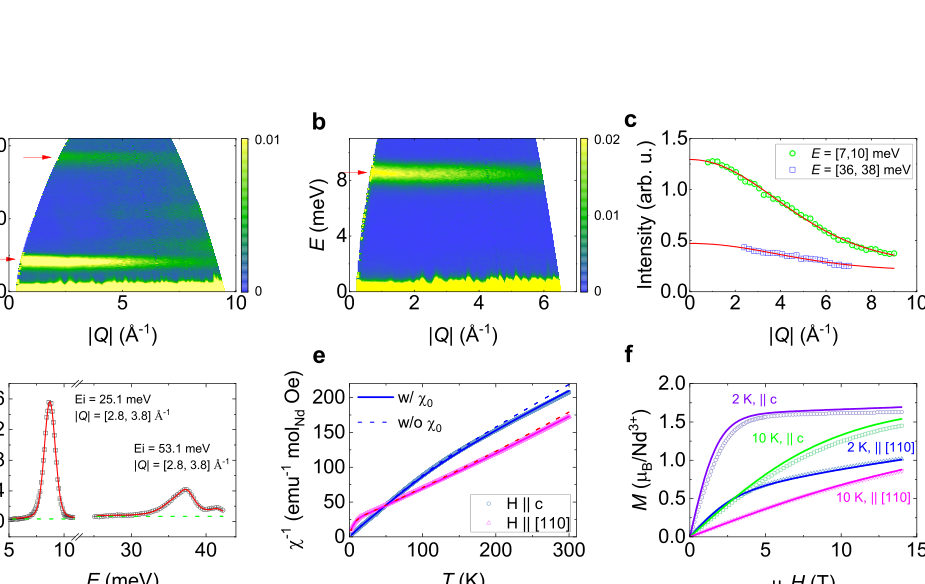
<figcaption class="paper-figure-caption"><b>Fig 1.</b> FIG. 1. Crystal electric field excitations. a-b, Inelastic neutron scattering intensity maps collected with incident neutron energies Ei of 53.1 and 25.1 meV, respectively, at 5 K. The red arrows indicate the CEF excitations. c, Momentum transfer (|Q|) dependence of the integrated intensities (I ) for the excitations at around 9 and 37 meV. The red curves are fits according to the form factor of Nd3+, I = I0f 2(Q) + Ibg, where I0 and Ibg are fitting parameters. d, Energy (E) dependence of the intensities integrated over |Q| along with a CEF fit. The green dashed lines are backgrounds. The error bars in c-d correspond to statistical errors equal to the square root of the intensities. e,...</figcaption>
</figure>
<figure class="paper-figure-card">
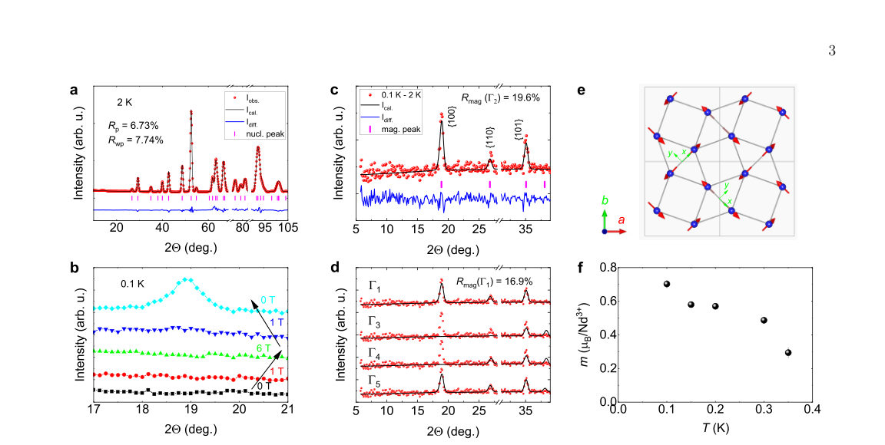
<figcaption class="paper-figure-caption"><b>Fig 2.</b> FIG. 2. Neutron diffraction measurements. a, Neutron powder diffraction pattern for Nd2Be2GeO7 collected at 2 K, along with a Rietveld refinement based on the crystal structure with the space group P¯421m. The excluded regions correspond to the peaks from the copper holder and the aluminum from the cryostat. b, Evolution of the low-angle intensities under a magnetic field cycled from 0 T to 6 T and back to 0 T at 0.1 K. c, Magnetic structure refinement based on the irreducible representation (IR) Γ2 against the difference pattern (I0.1 K −I2 K). d, Representative refinements based on other IRs. e, Magnetic structure for Nd2Be2GeO7 based on the best refinement according to Γ2. The red and green...</figcaption>
</figure>
<figure class="paper-figure-card">
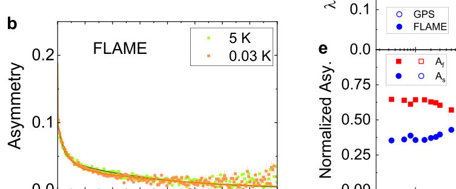
<figcaption class="paper-figure-caption"><b>Fig 3.</b> FIG. 3. Zero-field µSR measurements. a-b, Representative zero-field µSR spectra measured at various temperatures on the GPS and FLAME spectrometers, respectively. The solid curves are fits according to Eq. 1. c-d, Temperature dependence of the fast and slow muon spin relaxation rate λf and λs. e, Temperature dependence of the amplitudes Af and As. The error bars in a-b and c-e correspond to statistical errors and standard errors from the fits, respectively.</figcaption>
</figure>
<figure class="paper-figure-card">
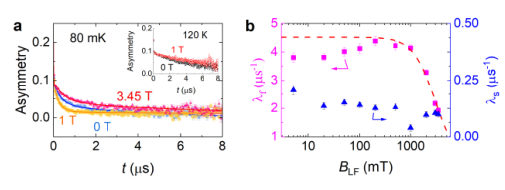
<figcaption class="paper-figure-caption"><b>Fig 4.</b> FIG. 4. Longitudinal-field µSR measurements. a, Representative µSR spectra measured at various external magnetic fields at 80 mK. The solid curves are fits according to Eq. 1. The inset shows the LF measurements at 120 K. The error bars are statistical errors. b, Temperature dependence of the relaxation rates λf and λs. The error bars are standard errors of the fits. The red curve is a fit to λf as described in the text.</figcaption>
</figure>
</div>

<p><strong>Summary.</strong> This work investigates the hidden-order state in the frustrated magnet Nd2Be2GeO7 using multiple advanced techniques like muSR and neutron diffraction. The key finding is that magnetic order appears only after field cycling, suggesting a unique ground state governed by spin-orbit coupling and frustration. This establishes the material as a distinct platform for studying quantum phase transitions.</p>
<p><strong>Why it may be interesting.</strong> The history-dependent emergence of magnetic order upon field cycling is a hallmark of complex quantum phase transitions, providing experimental evidence for exotic correlated states near quantum criticality.</p>
<details>
<summary>Detailed structure</summary>
<p><strong>Main problem.</strong> The study investigates a 'hidden order' state in the frustrated Shastry-Sutherland magnet Nd2Be2GeO7, characterized by thermodynamic anomalies without conventional magnetic ordering signatures.</p>
<p><strong>Main result.</strong> The system exhibits a hidden-order phase whose magnetic signature only emerges after cycling an applied magnetic field, suggesting proximity to quantum spin liquid or long-range ordered states.</p>
<p><strong>Method.</strong> A combination of techniques was used, including specific heat measurements, zero-field and longitudinal-field muon spin relaxation (muSR), neutron diffraction, and Electron Spin Resonance (ESR).</p>
<p><strong>Model / system.</strong> The physical system is the Shastry-Sutherland magnet Nd2Be2GeO7. The magnetic behavior is modeled by considering the interplay of spin-orbit coupling, crystal field effects, and magnetic frustration.</p>
<p><strong>Key observables.</strong> Sharp specific heat anomaly at 250 mK; absence of static magnetism in zero-field muSR/neutron diffraction; appearance of magnetic Bragg peaks only after field cycling; coherent spin fluctuations on the order of gigahertz.</p>
<p><strong>Important parameters / regimes.</strong> The excitation gap ($\Delta$ or $\delta$) is consistently found around $8.5 - 8.7$ meV; fluctuation rates ($
u$) are in the GHz range.</p>
<p><strong>Assumptions / limitations.</strong> The analysis assumes that the observed phenomena can be explained by a combination of CEF effects, magnetic frustration, and proximity to quantum critical points.</p>
<p><strong>Figures summary.</strong> Figures show CEF excitations via INS, evolution of neutron diffraction intensities under field cycling (Fig. 2b), and temperature dependence of susceptibility/magnetization.</p>
<p><strong>Paper structure.</strong> The paper progresses by establishing the hidden-order nature through multiple measurements (specific heat, muSR, NPD). It then uses detailed analysis of CEF excitations and field response to distinguish this state from known frustrated magnets, culminating in a discussion of its unique quantum ground state.</p>
</details>
<details>
<summary>Abstract</summary>
<p>Hidden order typically manifests as a thermodynamic phase transition without a conventional order parameter, leaving its true nature concealed even at the lowest temperatures. In the frustrated Shastry-Sutherland magnet Nd$_2$Be$_2$GeO$_7$, we observe a related yet fundamentally distinct phenomenon. A sharp specific-heat anomaly appears at 250 mK, but zero-field neutron diffraction and muon spin relaxation detect no static magnetism down to 100 and 30 mK, respectively, pointing to a hidden-order state. Remarkably, this hidden order does not emerge under an applied magnetic field, but instead reveals itself only after the field is applied and subsequently removed where magnetic Bragg peaks appear, albeit with strongly suppressed moments. A glassy state is ruled out by ac susceptibility and specific heat measurements. Complementary $μ$SR measurements reveal coherent spin fluctuations at a rate on the order of gigahertz. Taken together, these results suggest that the system lies in close proximity to the quantum spin liquid and long-range magnetic order state such that a small perturbation can effectively drive the system towards distinct ground states. These findings also distinguish Nd$_2$Be$_2$GeO$_7$ from known frustrated systems, establishing it as a unique platform where the synergistic interplay among the spin-orbit coupling, crystal field, and magnetic frustration leads to unexpected quantum states.</p>
</details>
<p><sub><a href="#top">↑ back to top</a></sub></p>

<p><a id="paper-2606.05542"></a></p>
<h3 id="thermalization-with-gaussian-quantum-cellular-automata"><a href="http://arxiv.org/abs/2606.05542v1">Thermalization with Gaussian Quantum Cellular Automata</a></h3>
<p><strong>Authors:</strong> Roman Geiko, Jake Gerenraich<br>
<strong>Type:</strong> theory · <strong>Category:</strong> statistical mechanics · <strong>PDF:</strong> <a href="https://arxiv.org/pdf/2606.05542v1">https://arxiv.org/pdf/2606.05542v1</a><br>
<strong>Analysis basis:</strong> full PDF text, analyzed in chunks
<strong>Topic relevance:</strong> <code>non-equilibrium dynamics</code> <strong>3/5</strong> · <code>non-equilibrium universality</code> <strong>2/5</strong> · <code>Keldysh / 2PI / non-Gaussian methods</code> <strong>1/5</strong> · <code>analog quantum simulation</code> <strong>1/5</strong> · <code>driven-dissipative phase transition</code> <strong>1/5</strong> · <code>entanglement &amp; information structure</code> <strong>1/5</strong> · <code>scars &amp; prethermalization</code> <strong>1/5</strong></p>
<div class="figure-strip-hint">↔ Scroll figures horizontally</div>
<div class="paper-figures-scroll">
<figure class="paper-figure-card">
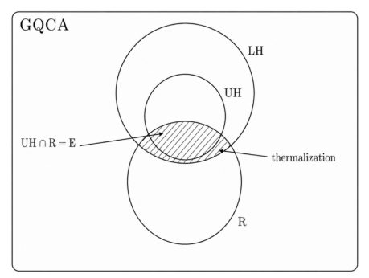
<figcaption class="paper-figure-caption"><b>Fig 1.</b> Fig. 1 LH, UH, R, and E stand for the local and uniform hyperbolicity, regularity and everydayness, respectively. The shaded region LH ∩R contains the GQCAs for which we prove thermalization.</figcaption>
</figure>
</div>

<p><strong>Summary.</strong> The paper rigorously proves that many-body bosonic lattice systems evolving under Gaussian Quantum Cellular Automata (GQCAs) thermalize to infinite temperature if the dynamics exhibit sufficient hyperbolic properties. The proof relies on advanced techniques from functional analysis, generalizing the Riemann–Lebesgue lemma to show that local observables lose memory of their initial state over time.</p>
<p><strong>Why it may be interesting.</strong> This work provides rigorous, mathematically deep criteria for when quantum systems governed by simple, local rules will reach equilibrium, which is a cornerstone problem in non-equilibrium statistical mechanics and quantum information theory.</p>
<details>
<summary>Detailed structure</summary>
<p><strong>Main problem.</strong> The central problem is rigorously establishing conditions on quantum dynamics (Gaussian Quantum Cellular Automata) that guarantee thermalization—the approach to infinite temperature equilibrium—for many-body bosonic lattice systems.</p>
<p><strong>Main result.</strong> Thermalization is proven under two sufficient conditions: global hyperbolicity or local hyperbolicity combined with regularity, leading to the decay of expectation values of local Weyl operators towards the infinite-temperature state.</p>
<p><strong>Method.</strong> The analysis uses techniques from functional analysis and operator theory, generalizing the Riemann–Lebesgue lemma to bound expectation values $\omega(W(\xi_k))$ by exploiting exponential growth in phase space combined with finite density moment conditions.</p>
<p><strong>Model / system.</strong> The system consists of bosonic lattice systems on $\mathbb{Z}^d$ whose time evolution is governed by translation-invariant Gaussian Quantum Cellular Automata (GQCAs). The dynamics are analyzed via the action on local Weyl operators $W(\xi)$.</p>
<p><strong>Key observables.</strong> Local Weyl operators $\omega(W(\xi))$, expectation values of local observables, and the particle density moment $\omega_{
ho_\Gamma}(N_\Gamma)$.</p>
<p><strong>Important parameters / regimes.</strong> The lattice dimension $d$, the hyperbolicity constants ($\gamma$), and the uniform bound on the particle density $
u$.</p>
<p><strong>Assumptions / limitations.</strong> The initial state must be locally normal, and the dynamics must satisfy specific hyperbolic conditions (global or local) related to the symplectic map $\Phi$ governing the evolution.</p>
<p><strong>Figures summary.</strong> Not specified in the notes; the structure relies on theorems and lemmas establishing decay rates based on spectral properties of the underlying maps.</p>
<p><strong>Paper structure.</strong> The paper builds from defining the necessary mathematical tools (Weyl algebra, local normality) to deriving key estimates (Riemann-Lebesgue generalization via commutator norms), culminating in proving thermalization under specific hyperbolic conditions for the GQCA dynamics.</p>
</details>
<details>
<summary>Abstract</summary>
<p>We study the long-time dynamics of many-body bosonic lattice systems under translation-invariant Gaussian quantum cellular automata. We formulate two sets of conditions on GQCAs which separately guarantee thermalization of any state on the local Weyl algebra to the infinite temperature state, whenever the state is locally normal and has uniformly bounded particle density. Our main intermediate result is a quantum many-body generalization of the classic Riemann-Lebesgue lemma which is a bound on expectation values of local Weyl operators involving their support and the state's particle density.</p>
</details>
<p><sub><a href="#top">↑ back to top</a></sub></p>

<p><a id="paper-2606.05349"></a></p>
<h3 id="opinion-dynamics-on-social-proximity-disordered-networks"><a href="http://arxiv.org/abs/2606.05349v1">Opinion dynamics on social proximity disordered networks</a></h3>
<p><strong>Authors:</strong> Fellipe Aranha, Giuliano G. Porciúncula, Adauto J. F. de Souza, Paulo R. A. Campos, André L. M. Vilela<br>
<strong>Type:</strong> theory · <strong>Category:</strong> statistical mechanics · <strong>PDF:</strong> <a href="https://arxiv.org/pdf/2606.05349v1">https://arxiv.org/pdf/2606.05349v1</a><br>
<strong>Analysis basis:</strong> full PDF text, analyzed in chunks
<strong>Topic relevance:</strong> <code>non-equilibrium universality</code> <strong>3/5</strong> · <code>driven-dissipative phase transition</code> <strong>2/5</strong> · <code>Frenkel-Kontorova</code> <strong>1/5</strong> · <code>methods for driven-dissipative</code> <strong>1/5</strong> · <code>non-equilibrium dynamics</code> <strong>1/5</strong></p>
<div class="figure-strip-hint">↔ Scroll figures horizontally</div>
<div class="paper-figures-scroll">
<figure class="paper-figure-card">
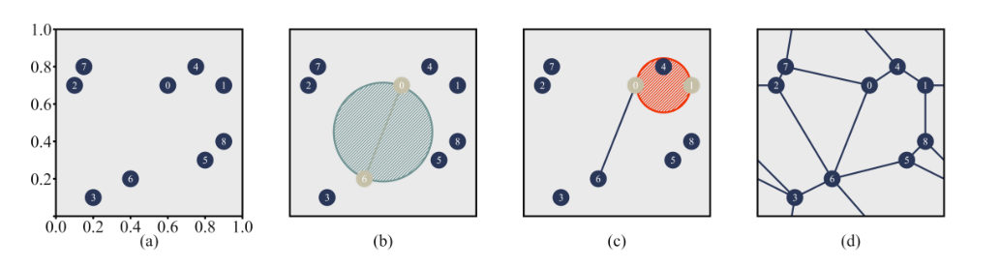
<figcaption class="paper-figure-caption"><b>Fig 1.</b> Fig. 1. Illustration of Gabriel graph construction from spatially distributed agents. (a) Initial spatial distribution of agents embedded in a two-dimensional 1 × 1 domain. (b) Candidate connection between nodes 0 and 6. The hatched green circle represents the disk whose diameter is defined by the candidate edge. Since no other node lies inside the disk, the connection satisfies the Gabriel condition and is accepted. (c) Candidate connection between nodes 0 and 1. In this case, node 4 lies inside the corresponding disk, denoted by the hatched red circle, violating the Gabriel condition and preventing edge formation. (d) Gabriel graph obtained after testing all node pairs according to the...</figcaption>
</figure>
<figure class="paper-figure-card">
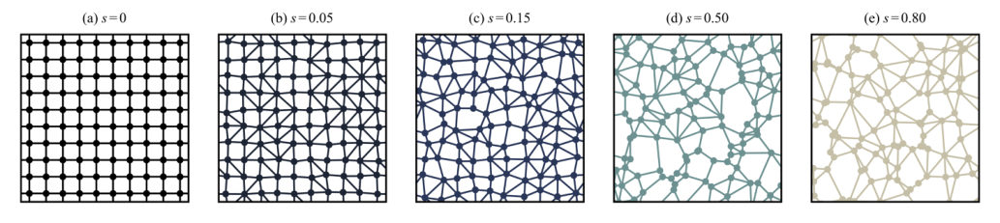
<figcaption class="paper-figure-caption"><b>Fig 2.</b> Fig. 2. Structural evolution of Gabriel graph social networks under increasing spatial disorder. Increasing disorder progressively breaks the lattice’s geometric regularity, alters local connectivity patterns, and generates heterogeneous proximity-based interaction structures. Representative realizations of the interaction networks for different disorder levels s: (a) s = 0, corresponding to the regular square-lattice regime; (b) s = 0.05, where weak positional perturbations introduce local diagonal connections; (c) s = 0.15, associated with the connectivity-enhanced regime and near maximum average coordination; (d) s = 0.50, where the network becomes spatially heterogeneous with irregular...</figcaption>
</figure>
<figure class="paper-figure-card">
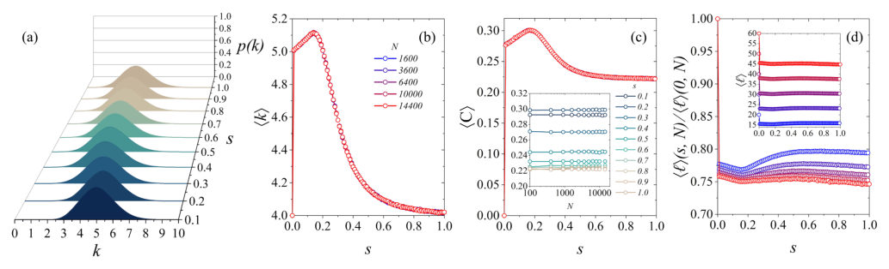
<figcaption class="paper-figure-caption"><b>Fig 3.</b> Fig. 3. Structural properties of Gabriel graph social networks under spatial disorder. (a) Dependence of the degree distribution p(k) with increasing disorder parameter s for N = 14400. Weak disorder shifts the distributions toward larger connectivities, while stronger disorder progressively broadens the distributions and moves them toward lower coordination values. (b) Average connectivity ⟨k⟩as a function of s for different system sizes N, revealing a disorder-induced connectivity enhancement followed by a gradual suppression toward the spatially random regime. (c) Average clustering coefficient ⟨C⟩as a function of s. Weak geometric disorder initially increases local clustering, while...</figcaption>
</figure>
<figure class="paper-figure-card">
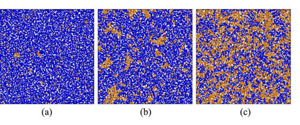
<figcaption class="paper-figure-caption"><b>Fig 4.</b> Fig. 4. Collective opinion patterns for increasing nonconformity levels. Snap- shots of a simulation on a Gabriel graph network with s = 0.5, N = 104 and increasing nonconformity q. Blue and orange nodes represent agents holding oppo- site opinions. (a) Ordered consensus regime at q = 0.036. (b) Critical region near the consensus–dissent transition at q = 0.073. (c) Disordered dissensus regime at q = 0.146.</figcaption>
</figure>
<figure class="paper-figure-card">
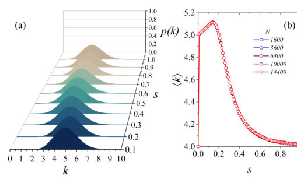
<figcaption class="paper-figure-caption"><b>Fig 5.</b> Fig. 3(c) shows the average clustering coefficient ⟨C⟩, which quanti- fies the tendency of neighboring agents to form locally interconnected groups. In the regular lattice regime of s = 0, the clustering coefficient vanishes because square lattices do not contain triangular neighbor- hoods. Introducing weak disorder rapidly increases ⟨C⟩, reflecting the emergence of local triangular connections and community-like struc- tures generated by positional perturbations. For larger disorder levels, the clustering coefficient stabilizes around an intermediate value, indi- cating that local social cohesion persists even in strongly disordered proximity networks. The inset further shows that...</figcaption>
</figure>
</div>

<p><strong>Summary.</strong> This paper models opinion dynamics on social networks whose connections are governed by physical proximity (Gabriel graphs). By introducing controlled spatial disorder, the authors study the resulting consensus-dissent phase transitions. They rigorously demonstrate that despite geometric heterogeneity, the critical behavior remains universal, matching the 2D Ising model predictions.</p>
<p><strong>Why it may be interesting.</strong> The work provides a concrete example of how geometric embedding and local interaction rules can constrain the critical exponents of complex systems, suggesting that dimensionality is dictated by topology rather than just connectivity structure.</p>
<details>
<summary>Detailed structure</summary>
<p><strong>Main problem.</strong> The study investigates how local social pressure, mediated by geometric proximity constraints, shapes collective opinion formation dynamics.</p>
<p><strong>Main result.</strong> The model exhibits second-order phase transitions whose critical behavior remains compatible with the two-dimensional Ising universality class, regardless of moderate levels of spatial disorder.</p>
<p><strong>Method.</strong> Analysis involves simulating majority-vote opinion dynamics on Gabriel graphs and characterizing criticality using finite-size scaling techniques (magnetization, susceptibility, Binder's cumulant).</p>
<p><strong>Model / system.</strong> The system models social opinion dynamics ($\sigma_i = \pm 1$) where interactions are restricted by the geometric proximity rule of Gabriel graphs. Disorder is introduced via random displacement parameters ($s$), and consensus breakdown is controlled by a nonconformity parameter ($q$).</p>
<p><strong>Key observables.</strong> Magnetization, susceptibility, Binder's fourth-order cumulant, critical exponents ($eta/
u$, $\gamma/
u$, $1/
u$).</p>
<p><strong>Important parameters / regimes.</strong> Geometric disorder strength ($s$), Nonconformity level ($q$), System size ($L$ or $N$).</p>
<p><strong>Assumptions / limitations.</strong> The analysis assumes that the system's critical behavior can be accurately described by either volumetric or standard hyperscaling relations, and that planar, spatially constrained networks retain dimensionality $d=2$.</p>
<p><strong>Figures summary.</strong> Figures illustrate Gabriel graph construction (showing proximity rules), structural evolution under disorder ($s$), and data collapse plots for finite-size scaling analysis using both linear and volumetric methods.</p>
<p><strong>Paper structure.</strong> The paper systematically analyzes the structure of Gabriel graphs as a function of disorder ($s$) to determine network metrics ($\langle k 
angle, \langle C 
angle, \langle \ell 
angle$). It then links these structural changes to the critical behavior of opinion dynamics by varying nonconformity ($q$), culminating in rigorous finite-size scaling tests confirming Ising universality.</p>
</details>
<details>
<summary>Abstract</summary>
<p>Understanding how local social pressure shapes collective opinion formation is essential in modern society, with implications in sociology, politics, finance, and technology. Complex networks are a powerful framework for investigating these processes and for representing social interactions in emergent phenomena, and canonical models such as random, scale-free, and small-world networks remain most relevant when Euclidean geometric proximity and contiguous interactions are not the dominant organizing factors. Our investigation explores the effects of Gabriel graphs, a spatially embedded network that utilizes proximity-based interactions, on social opinion dynamics. Using a geometric disorder parameter that randomly displaces agent coordinates, we transition from square lattices of social interactions to spatial random networks that preserve local constraints while introducing strong topological heterogeneity. Opinion dynamics operate through social pressure, with a level of nonconformity that affects dissent among opinions. We analyze magnetization, susceptibility, and Binder's fourth-order cumulant to characterize the emergence and breakdown of global social consensus. The model exhibits second-order phase transitions whose behavior depends on both geometric disorder and nonconformity levels. We use volumetric scaling and provide a reference frame appropriate for characterizing criticality in regular and heterogeneous interaction topologies. We find that the standard critical exponents remain compatible with the two-dimensional Ising universality class. Furthermore, the results suggest that spatially constrained, planar, and globally connected interaction topologies preserve the dimensionality of space in critical dynamics analysis.</p>
</details>
<p><sub><a href="#top">↑ back to top</a></sub></p>

<p><a id="paper-2606.05822"></a></p>
<h3 id="study-on-the-validity-of-iptparquet-method-as-an-impurity-solver-in-dmft-focusing-on-orbital-fluctuations"><a href="http://arxiv.org/abs/2606.05822v1">Study on the validity of IPT+parquet method as an impurity solver in DMFT focusing on orbital fluctuations</a></h3>
<p><strong>Authors:</strong> Aira Yamada, Ryota Mizuno, Masayuki Ochi, Kazuhiko Kuroki, Takuma Ohashi<br>
<strong>Type:</strong> theory · <strong>Category:</strong> strongly correlated electrons · <strong>PDF:</strong> <a href="https://arxiv.org/pdf/2606.05822v1">https://arxiv.org/pdf/2606.05822v1</a><br>
<strong>Analysis basis:</strong> full PDF text, analyzed in chunks
<strong>Topic relevance:</strong> <code>Keldysh / 2PI / non-Gaussian methods</code> <strong>3/5</strong> · <code>analog quantum simulation</code> <strong>3/5</strong> · <code>Kondo &amp; dissipative impurity</code> <strong>1/5</strong> · <code>methods for driven-dissipative</code> <strong>1/5</strong></p>
<div class="figure-strip-hint">↔ Scroll figures horizontally</div>
<div class="paper-figures-scroll">
<figure class="paper-figure-card">
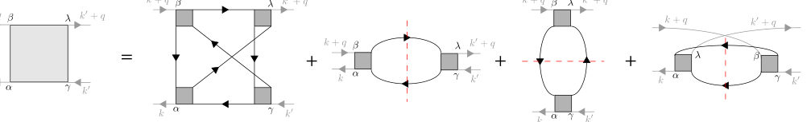
<figcaption class="paper-figure-caption"><b>Fig 1.</b> FIG. 1. The decomposition of the full vertex. The full vertex can be divided into four parts: the fully irreducible part (Λ) and the reducible parts (Φl, l = ph, ph, pp). The reducible vertices Φl can be divided into two parts by cutting a pair of Green’s functions as indicated by the red dashed lines.</figcaption>
</figure>
<figure class="paper-figure-card">
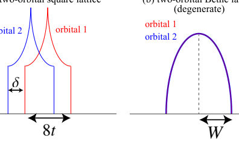
<figcaption class="paper-figure-caption"><b>Fig 2.</b> FIG. 2. The noninteracting density of states of the models. Left and right panels show the density of states of two-orbital square lattice and two-orbital Bethe lattice, respectively.</figcaption>
</figure>
<figure class="paper-figure-card">
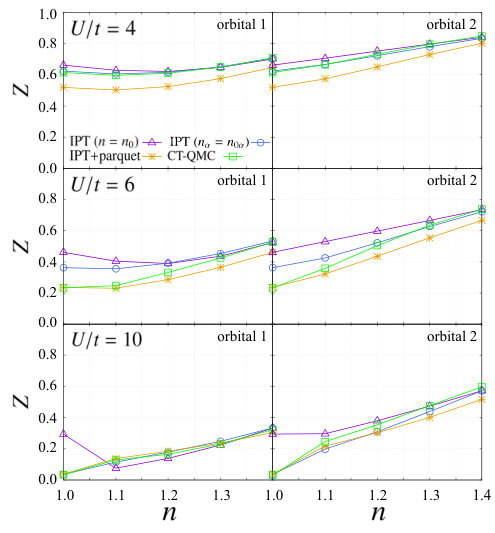
<figcaption class="paper-figure-caption"><b>Fig 3.</b> FIG. 3. The band filling n dependence of the quasiparticle weight Z of the two-orbital square lattice model. The temperature is T/t = 0.2 and the on-site energy difference is δ/t = 1.6. Triangle, circle, as- terisk, and square symbols (purple, blue, khaki, and green lines) rep- resent IPTn=n0, IPTnα=n0α, IPT+parquet, and CT-QMC, respectively. Top, middle, and bottom panels show the quasiparticle weight Z at U/t = 4, 6, 10, respectively. The left and right panels indicate orbital 1 and orbital 2, respectively.</figcaption>
</figure>
<figure class="paper-figure-card">
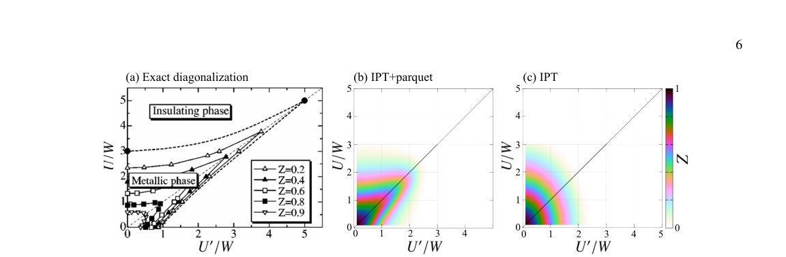
<figcaption class="paper-figure-caption"><b>Fig 4.</b> FIG. 4. The interaction strength (U, U′) dependence of the quasiparticle weight Z of the two-orbital Bethe lattice model obtained by (a) Exact diagonalization, (b) IPT+parquet, and (c) IPT, respectively. The Hund coupling and pair hopping are fixed as J = J′ = 0. The temperatures are (a) T/W = 0 and (b), (c) T/W = 0.005, respectively. Left figure is taken from Ref. [12].</figcaption>
</figure>
<figure class="paper-figure-card">
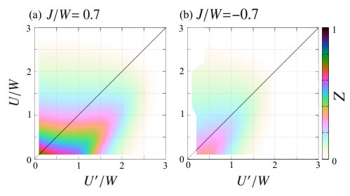
<figcaption class="paper-figure-caption"><b>Fig 5.</b> FIG. 5. The interaction strength (U, U′) dependence of the quasi- particle weight Z of the two-orbital Bethe lattice model obtained by IPT+parquet. The Hund coupling is (a) J/W = 0.7 and (b) J/W = −0.7, respectively. The pair hopping is J′ = 0. The tem- perature is T/t = 0.005.</figcaption>
</figure>
</div>

<p><strong>Summary.</strong> This paper rigorously validates the IPT+parquet method as an advanced impurity solver for DMFT in multi-orbital systems. It demonstrates that this combined technique accurately captures subtle physics, particularly orbital fluctuations, which simpler methods fail to resolve. The work provides a reliable computational tool for studying strongly correlated materials beyond simple Hubbard models.</p>
<p><strong>Why it may be interesting.</strong> While focused on condensed matter strongly correlated physics, the development of robust, scalable numerical solvers like IPT+parquet is a general computational tool relevant to any field requiring complex many-body simulations (e.g., quantum chemistry or AMO systems with strong interactions).</p>
<details>
<summary>Detailed structure</summary>
<p><strong>Main problem.</strong> The study aims to validate the IPT+parquet method as a computationally inexpensive yet accurate impurity solver for Dynamical Mean Field Theory (DMFT), specifically focusing on its ability to capture orbital fluctuations in multiband systems.</p>
<p><strong>Main result.</strong> IPT+parquet successfully captures competition between orbital fluctuation channels, which conventional IPT fails to describe. The inclusion of the parquet contribution is crucial for accurately modeling these multi-orbital Mott physics effects.</p>
<p><strong>Method.</strong> The authors compare results from IPT+parquet against numerically exact solvers (like CT-QMC) and simpler approximations by analyzing the self-energy calculation within DMFT.</p>
<p><strong>Model / system.</strong> The research uses a multiband Hubbard model, applied to two-orbital systems on both square lattices and Bethe lattices. The Hamiltonian includes hopping integrals and various Coulomb repulsion terms ($U, U', J, J'$).</p>
<p><strong>Key observables.</strong> Quasiparticle weight ($Z_\alpha$), which probes correlation effects; band-filling ($n_\alpha$).</p>
<p><strong>Important parameters / regimes.</strong> Interaction strengths ($U, U'$) and the ratio between them relative to Hund coupling ($J$); the system is studied near half-filling.</p>
<p><strong>Assumptions / limitations.</strong> The method relies on combining Iterative Perturbation Theory (IPT) with the parquet equation. Modifications were necessary for stability when interaction parameters deviate from specific relationships (e.g., $U' = U -2J$).</p>
<p><strong>Figures summary.</strong> Figures compare the quasiparticle weight ($Z$) as a function of filling or interaction strength across multiple methods (Exact, IPT+parquet, conventional IPT), demonstrating where agreement is achieved and where failures occur.</p>
<p><strong>Paper structure.</strong> The paper first introduces the theoretical framework (DMFT, Parquet, IPT) and then validates IPT+parquet by applying it to two-orbital models on both square and Bethe lattices. Subsequent sections detail necessary modifications to the parquet calculation for improved stability.</p>
</details>
<details>
<summary>Abstract</summary>
<p>A breakdown of calculations with exact impurity solvers in the dynamical mean field theory in multiband systems easily occurs due to the expensive numerical cost. To overcome this practical difficulty, three of the present authors developed an inexpensive and reliable impurity solver by combining the iterative perturbation theory (IPT) and parquet equation, and named it IPT+parquet [R. Mizuno, et al., Phys. Rev. B 104, 035160 (2021).]. In this study, we validate IPT+parquet focusing on the orbital fluctuation by comparing the numerically exact impurity solvers. We confirm that IPT+parquet can capture competition between orbital fluctuation channels, which the conventional IPT cannot capture.</p>
</details>
<p><sub><a href="#top">↑ back to top</a></sub></p>

<p><a id="paper-2606.06290"></a></p>
<h3 id="early-psychosis-shows-deviations-in-scaling-behaviour-within-a-critical-regime"><a href="http://arxiv.org/abs/2606.06290v1">Early psychosis shows deviations in scaling behaviour within a critical regime</a></h3>
<p><strong>Authors:</strong> Irem Topal, Paola Moreno Ancalmo, Guillermo Montana Valverde, Philipp Homan, Wolfram Hinzen<br>
<strong>Type:</strong> experiment · <strong>Category:</strong> statistical mechanics · <strong>PDF:</strong> <a href="https://arxiv.org/pdf/2606.06290v1">https://arxiv.org/pdf/2606.06290v1</a><br>
<strong>Analysis basis:</strong> full PDF text, analyzed in chunks
<strong>Topic relevance:</strong> <code>non-equilibrium universality</code> <strong>3/5</strong> · <code>non-equilibrium dynamics</code> <strong>2/5</strong> · <code>Keldysh / 2PI / non-Gaussian methods</code> <strong>1/5</strong> · <code>driven-dissipative phase transition</code> <strong>1/5</strong></p>
<div class="figure-strip-hint">↔ Scroll figures horizontally</div>
<div class="paper-figures-scroll">
<figure class="paper-figure-card">
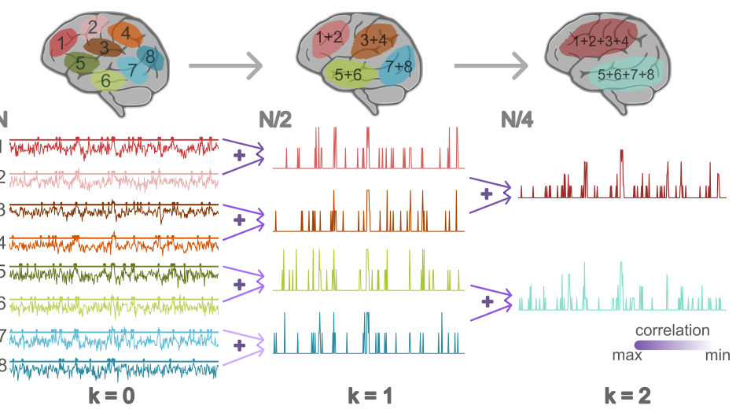
<figcaption class="paper-figure-caption"><b>Fig 1.</b> Figure 1: Schematic illustration of the PRG procedure. Initially (k = 0), each variable is binarized inde- pendently. At each coarse-graining step k, pairs of maximally correlated variables are summed, generating clusters of size K = 2k and reducing the total number of clusters to NK = N/2k. Scaling properties are then evaluated as a function of the coarse-graining scale.</figcaption>
</figure>
<figure class="paper-figure-card">
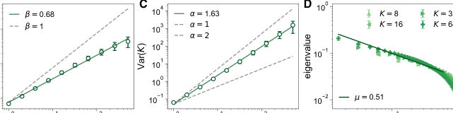
<figcaption class="paper-figure-caption"><b>Fig 2.</b> Figure 2: Resting-state whole-brain activity reveals statistical signatures of criticality. A. Average probability distribution for normalized nonzero activity across 25 control subjects. Darker green indicates larger cluster sizes. B. Average log-probability of silence in coarse-grained variables (lnP0) as a function of cluster size, K. The solid line represents a linear least-squares fit of −lnP0 = Kβ, where β = 0.68. The gray dashed line indicates predicted behaviour of uncorrelated variables β = 1. C. Average variance (Var) of the non-normalized coarse-grained variables across subjects as a function of the cluster size, K. The solid line corresponds to the linear least-square fit, log V...</figcaption>
</figure>
<figure class="paper-figure-card">
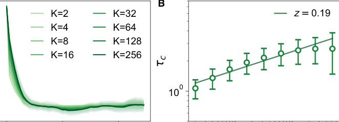
<figcaption class="paper-figure-caption"><b>Fig 3.</b> Figure 3: Dynamic scaling under coarse-graining for healty controls. A. Average autocorrelation func- tions C(τ) for each cluster size K. For each subject, autocorrelations are computed and averaged across clusters; the curves shown correspond to the mean across subjects. Shaded regions indicate the standard de- viation. B. Autocorrelation time τc, obtained by fitting an exponential decay to the average autocorrelation function of each healthy subject individually. The points show the mean τc across controls as a function of K, with error bars denoting the standard deviation. A power-law scaling τc ∝Kz is observed; the reported exponent z = 0.19 is obtained from a least-squares fit to the...</figcaption>
</figure>
<figure class="paper-figure-card">
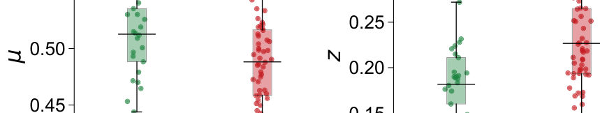
<figcaption class="paper-figure-caption"><b>Fig 4.</b> Figure 4: Altered scaling exponents in early psychosis. Distributions of scaling exponents across subjects for healthy controls (green) and EP-patients (red). Each panel corresponds to a different exponent obtained from PRG analysis: A. silence probability exponent β, B. variance scaling exponent α, C. eigenspectrum exponent µ, and D. dynamical scaling exponent z. For each group, boxplots summarize the distribution of subject-level exponents, with boxes indicating the interquartile range and whiskers extending to the data range excluding outliers (fliers not shown). Horizontal black lines indicate group means. Statistical com- parisons between groups were performed using Welch’s t-tests,...</figcaption>
</figure>
<figure class="paper-figure-card">
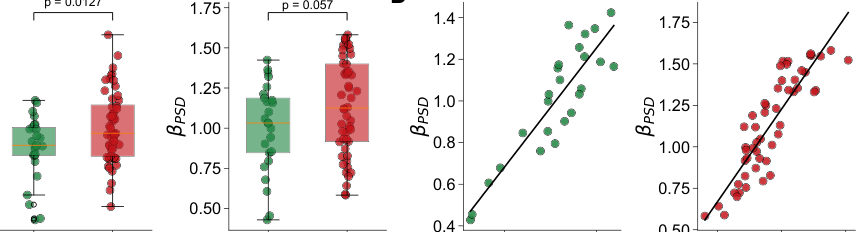
<figcaption class="paper-figure-caption"><b>Fig 5.</b> Figure 5: Temporal scaling of global signals. A. Power spectra of global signals from individual control subjects shown in log-log scale. Each line corresponds to one subject. The dashed gray line indicates the frequency range used for estimating the scaling exponent βPSD. B. DFA plots of global signals from control subjects, showing the fluctuation function F(n) measured at different time-window lengths and plotted in double-logarithmic scale. Each line corresponds to one subject. The dashed gray line indicates the fitting range used to estimate the scaling exponent αDFA. C. Group differences. Boxplots display the median and interquartile range, with individual subjects overlaid....</figcaption>
</figure>
</div>

<p><strong>Summary.</strong> This study analyzes resting-state fMRI data from early psychosis patients using advanced techniques rooted in statistical physics, including the Phenomenological Renormalization Group. By comparing scaling exponents across multiple observables, the authors argue that psychosis involves a reorganization of collective dynamics rather than a simple breakdown of critical organization. This provides a quantitative framework linking concepts from condensed matter physics to psychiatric neuroscience.</p>
<p><strong>Why it may be interesting.</strong> This work applies concepts from critical phenomena and renormalization group theory—tools central to statistical mechanics—to analyze complex biological time series data (fMRI). The quantitative comparison of scaling exponents provides a rigorous physical framework for studying brain function.</p>
<details>
<summary>Detailed structure</summary>
<p><strong>Main problem.</strong> The study investigates how large-scale brain activity organizes across space and time, specifically looking for deviations from critical scaling behavior in early psychosis compared to healthy controls.</p>
<p><strong>Main result.</strong> Early psychosis is characterized not by a simple loss of critical dynamics, but rather by a systematic reorganization of collective dynamics within a preserved scale-invariant regime. This reorganization involves differential shifts in various scaling exponents ($eta$, $\alpha$, $\mu$, $z$).</p>
<p><strong>Method.</strong> The researchers combined the Phenomenological Renormalization Group (PRG) framework with temporal analyses like Power Spectral Density (PSD) and Detrended Fluctuation Analysis (DFA) on resting-state fMRI data.</p>
<p><strong>Model / system.</strong> The physical system is human brain activity measured via functional Magnetic Resonance Imaging (fMRI) BOLD signals. The analysis treats the collective dynamics as a complex, multi-scale system exhibiting critical-like organization.</p>
<p><strong>Key observables.</strong> Scaling exponents ($eta$, $\alpha$, $\mu$, $z$), DFA exponent ($\alpha_{DFA}$), PSD exponent ($eta_{PSD}$), and characteristic time scales ($  au_c$).</p>
<p><strong>Important parameters / regimes.</strong> The analysis is performed across multiple spatial/temporal scales (coarse-graining levels $K$) and uses various binarization thresholds (1 to 2 SD).</p>
<p><strong>Assumptions / limitations.</strong> It assumes that the PRG framework provides a principled way to characterize collective dynamics, and that the observed scaling changes reflect underlying functional reorganization rather than mere noise artifacts.</p>
<p><strong>Figures summary.</strong> Figures illustrate the progression of the PRG coarse-graining process, compare calculated exponents ($eta$, $\alpha$, etc.) between controls and patients across different thresholds, and show temporal scaling analyses (PSD/DFA) indicating altered long-range correlations in psychosis.</p>
<p><strong>Paper structure.</strong> The paper follows a structure moving from establishing the theoretical framework (PRG, DFA) to applying it rigorously to fMRI data. It details preprocessing, presents results comparing healthy vs. patient groups across multiple scaling metrics, and concludes by synthesizing these findings into a model of dynamic reorganization.</p>
</details>
<details>
<summary>Abstract</summary>
<p>Accumulating evidence suggests that large-scale brain activity exhibits scale-invariant dynamics consistent with operation in a near-critical regime. Such dynamics have been associated with long-range correlations, efficient information processing, and the emergence of collective organization. While altered criticality-related measures have been reported in psychiatric disorders, previous findings remain fragmented across observables and modalities, making it unclear whether different scaling measures capture a common alteration of large-scale brain dynamics. Here, we investigated scaling properties in resting-state fMRI data from individuals with early psychosis and healthy controls. We combined a phenomenological renormalization group (PRG) framework with power spectral density (PSD) and detrended fluctuation analysis (DFA) to characterize collective dynamics across scales. In healthy controls, resting-state activity exhibited non-trivial scaling behavior consistent with critical-like organization. Early psychosis participants showed the same overall phenomenology of scale-invariant organization, but with systematic shifts in scaling exponents across multiple observables. These findings indicate that early psychosis is not characterized by a simple loss of critical-like dynamics, but rather by a reorganization of collective dynamics within a preserved scaling regime. More broadly, our results suggest that combining coarse-graining approaches with temporal scaling analyses provides a principled framework for studying large-scale brain dynamics in psychiatric disorders.</p>
</details>
<p><sub><a href="#top">↑ back to top</a></sub></p>

<p><a id="paper-2606.06246"></a></p>
<h3 id="multiple-quantum-hypothesis-testing-one-shot-pairwise-bounds-and-sharp-asymptotics"><a href="http://arxiv.org/abs/2606.06246v1">Multiple Quantum Hypothesis Testing: One-Shot Pairwise Bounds and Sharp Asymptotics</a></h3>
<p><strong>Authors:</strong> Hao-Chung Cheng, Po-Chieh Liu<br>
<strong>Type:</strong> theory · <strong>Category:</strong> other · <strong>PDF:</strong> <a href="https://arxiv.org/pdf/2606.06246v1">https://arxiv.org/pdf/2606.06246v1</a><br>
<strong>Analysis basis:</strong> full PDF text, analyzed in chunks
<strong>Topic relevance:</strong> <code>quantum measurements</code> <strong>3/5</strong> · <code>entanglement &amp; information structure</code> <strong>2/5</strong> · <code>measurement-induced transitions</code> <strong>1/5</strong></p>
<div class="figure-strip-hint">↔ Scroll figures horizontally</div>
<div class="paper-figures-scroll">
<figure class="paper-figure-card">
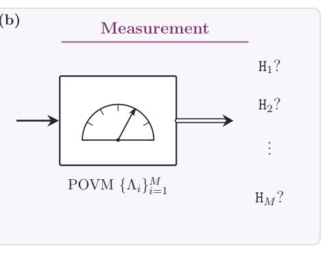
<figcaption class="paper-figure-caption"><b>Fig 1.</b> Figure 1. Illustration of the multiple quantum hypothesis testing.</figcaption>
</figure>
</div>

<p><strong>Summary.</strong> This paper rigorously analyzes the minimum error probability when distinguishing between multiple unknown quantum states. It establishes sharp bounds by connecting the problem to operator means (like the harmonic mean) and proves that these bounds are achievable asymptotically. The results settle long-standing conjectures regarding the performance limits of quantum hypothesis testing in infinite dimensions.</p>
<p><strong>Why it may be interesting.</strong> This work provides fundamental theoretical tools—sharp error exponents and generalized divergence measures—that govern the limits of quantum measurement capabilities, which is crucial for understanding resource theories in quantum information processing.</p>
<details>
<summary>Detailed structure</summary>
<p><strong>Main problem.</strong> The core problem is establishing rigorous, sharp error bounds for discriminating among multiple quantum states ($\{
ho_i\}$) in both finite-shot and asymptotic (many-copy) regimes.</p>
<p><strong>Main result.</strong> The authors establish a dimension-free one-shot upper bound on the minimum probability of error and prove that this bound is achievable asymptotically, settling open problems regarding the multiple quantum Chernoff distance in infinite dimensions.</p>
<p><strong>Method.</strong> The analysis employs advanced tools from quantum information theory, including deriving bounds using operator means (like the harmonic mean), applying large deviation theory (Cramér's condition), and utilizing techniques like spectral decomposition and local limit theorems.</p>
<p><strong>Model / system.</strong> The system is general quantum hypothesis testing involving density operators $
ho_i$ on a separable Hilbert space. The test uses an optimal Positive Operator-Valued Measure (POVM) $\{\Lambda_i\}$ to minimize the error probability.</p>
<p><strong>Key observables.</strong> Minimum probability of decision error ($   ext{Err}^\star$), Quantum Chernoff distance ($C(
ho_1, \dots, 
ho_M)$), and harmonic mean quantities ($    ext{HMs}(A, B)$).</p>
<p><strong>Important parameters / regimes.</strong> Number of hypotheses ($M$), prior probabilities ($p_i$), number of copies ($n$), and the asymptotic parameter $s$ in operator means.</p>
<p><strong>Assumptions / limitations.</strong> The analysis often assumes conditions required for large deviation theorems (e.g., non-orthogonality, finite moments) or relies on extending results from finite-rank approximations to general trace-class operators.</p>
<p><strong>Figures summary.</strong> Figure 1 illustrates the setup of multiple quantum hypothesis testing using a POVM $\{\Lambda_i\}_{i=1}^M$. Equations detail asymptotic decay rates and harmonic mean relationships.</p>
<p><strong>Paper structure.</strong> The paper progresses from establishing general one-shot bounds for multiple hypotheses, to deriving sharp characterizations for the binary case using harmonic means, and finally extending these results to derive almost-exact asymptotics in the i.i.d. limit.</p>
</details>
<details>
<summary>Abstract</summary>
<p>We consider Bayesian discrimination among multiple quantum states and establish a dimension-free one-shot upper bound on the minimum probability of error in terms of the sum of pairwise errors. This resolves a conjecture of Audenaert and Mosonyi [J. Math. Phys. 55 (2014)] and improves the multiple quantum Chernoff bound of Li [Ann. Statist. 44 (2016)] by removing its dimension-dependent prefactor. In the asymptotic many-copy regime, our bound proves the achievability of the multiple quantum Chernoff distance for arbitrary separable Hilbert spaces, thereby settling the previously open infinite-dimensional case, and further yields constant-factor sharp asymptotics for the optimal error probability.   In binary quantum hypothesis testing, we prove that the minimum error probability is characterized, up to universal constants, by a trace harmonic-mean quantity. Consequently, the optimal binary quantum error probability is within a factor of two of the optimal classical error probability for the associated Nussbaum-Szkoła distributions, complementing the lower bound of Nussbaum and Szkoła [Ann. Statist. 37 (2009)].</p>
</details>
<p><sub><a href="#top">↑ back to top</a></sub></p>

<p><a id="paper-2606.06101"></a></p>
<h3 id="quantum-limited-estimation-of-atmospheric-turbulence-via-spatial-mode-decomposition"><a href="http://arxiv.org/abs/2606.06101v1">Quantum-limited estimation of atmospheric turbulence via spatial mode decomposition</a></h3>
<p><strong>Authors:</strong> A. Hrebeniuk, M. Klen, I. Karuseichyk, N. Treps, A. A. Semenov<br>
<strong>Type:</strong> theory · <strong>Category:</strong> other · <strong>PDF:</strong> <a href="https://arxiv.org/pdf/2606.06101v1">https://arxiv.org/pdf/2606.06101v1</a><br>
<strong>Analysis basis:</strong> full PDF text, analyzed in chunks
<strong>Topic relevance:</strong> <code>quantum measurements</code> <strong>3/5</strong> · <code>entanglement &amp; information structure</code> <strong>1/5</strong> · <code>interference shaping light</code> <strong>1/5</strong> · <code>measurement-induced transitions</code> <strong>1/5</strong></p>
<div class="figure-strip-hint">↔ Scroll figures horizontally</div>
<div class="paper-figures-scroll">
<figure class="paper-figure-card">
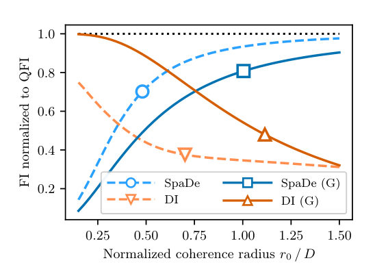
<figcaption class="paper-figure-caption"><b>Fig 1.</b> FIG. 2. Ratio of the FI to the QFI, I(r0)/K(r0), as a function of the spatial coherence radius r0, for DI and binary SpaDe. Solid lines correspond to the Gaussian (G) approximation, while dashed lines show results obtained from the realistic model, cf. Eq. (9).</figcaption>
</figure>
<figure class="paper-figure-card">
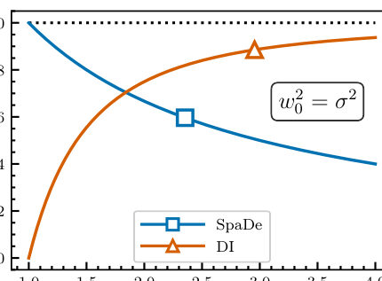
<figcaption class="paper-figure-caption"><b>Fig 2.</b> FIG. 1. Ratio of the FI to QFI, I  θ2 /K  θ2 , as a function of the parameter θ2, for DI and SpaDe.</figcaption>
</figure>
<figure class="paper-figure-card">
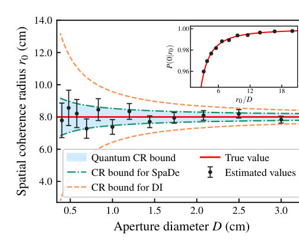
<figcaption class="paper-figure-caption"><b>Fig 3.</b> FIG. 3. Results of the numerical simulation of light prop- agation and subsequent estimation of r0 using binary detec- tion. The variance asymptotically approaches the CR bound for the SpaDe. Parameters: propagation length 1 km, re- fractive index structure constant C2 n = 3.9 × 10−16 m−2/3, wavelength 578 nm, wind velocity 10 m/s, time step 0.2 ms, acquisition time 100 s, mean photon number within the aper- ture νSap = 0.02, and sample size M = 8940. Inset: P(0|r0) vs r0/D, cf. Eq. (18), with sampled points.</figcaption>
</figure>
<figure class="paper-figure-card">
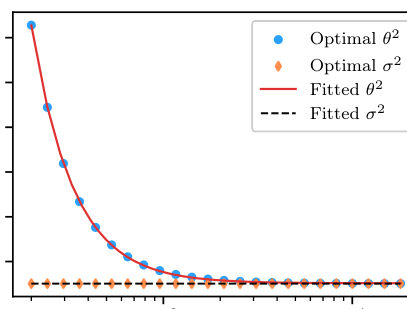
<figcaption class="paper-figure-caption"><b>Fig 4.</b> FIG. 4. Parameters σ2 and θ2, normalized to (λf/D)2, vs the normalized coherence radius r0/D. The parameters are obtained by maximizing the quantum fidelity and subse- quently fitted by Eq. (12).</figcaption>
</figure>
</div>

<p><strong>Summary.</strong> This paper theoretically investigates how precisely one can measure the spatial coherence radius of light passing through turbulent air. It compares two detection methods—Direct Imaging and Spatial Mode Decomposition—using quantum metrology tools like Fisher Information. The key finding is that SpaDe provides a substantially more precise estimation than DI, especially when the turbulence effects are weak.</p>
<p><strong>Why it may be interesting.</strong> This work bridges advanced topics in quantum estimation theory with applied physics challenges like atmospheric sensing, providing concrete metrics (FI/QFI) to quantify measurement improvement beyond classical limits.</p>
<details>
<summary>Detailed structure</summary>
<p><strong>Main problem.</strong> The primary goal is establishing the ultimate quantum precision limit for estimating the optical spatial coherence radius (Fried parameter, $r_0$) of atmospheric turbulence.</p>
<p><strong>Main result.</strong> Spatial Mode Decomposition (SpaDe) significantly outperforms conventional Direct Imaging (DI) in the weak-scintillation regime, approaching the theoretical quantum limit when properly implemented.</p>
<p><strong>Method.</strong> The analysis uses quantum metrology principles, comparing the Fisher Information (FI) derived from DI versus SpaDe measurements against the Quantum Fisher Information (QFI).</p>
<p><strong>Model / system.</strong> The system involves light propagating through a turbulent atmosphere, modeled using single-photon density operators and characterized by field correlation functions ($\Gamma$). The analysis compares two measurement schemes: Direct Imaging (DI) and Spatial Mode Decomposition (SpaDe).</p>
<p><strong>Key observables.</strong> Fisher Information (FI), Quantum Fisher Information (QFI), spatial coherence radius ($r_0$), and the ratio FI/QFI.</p>
<p><strong>Important parameters / regimes.</strong> Weak field regime ($\eta n_{th} \ll 1$); normalized parameters $    heta_2$ and $\sigma_2$; the aperture size $D$.</p>
<p><strong>Assumptions / limitations.</strong> The analysis relies on the weak-field approximation and often employs a Gaussian approximation for the complex correlation functions to derive analytical results.</p>
<p><strong>Figures summary.</strong> Figures compare the ratio of FI to QFI for DI vs. SpaDe, showing SpaDe's superior performance in the weak-scintillation regime; other figures plot these metrics as functions of $r_0/D$.</p>
<p><strong>Paper structure.</strong> The paper develops by first establishing the quantum estimation framework using CR bounds and QFI. It then analyzes two measurement techniques (DI vs. SpaDe) under Gaussian approximations, deriving explicit FI expressions for both. Finally, it compares these results against realistic models to demonstrate the advantage of SpaDe.</p>
</details>
<details>
<summary>Abstract</summary>
<p>We establish the ultimate precision limit for estimating the optical spatial coherence radius (Fried parameter) within a quantum metrological framework. In the weak field regime, we show that spatial-mode decomposition -- originally introduced for superresolution imaging -- enables substantially more precise estimation than conventional direct imaging when the receiver aperture is smaller than the coherence radius.</p>
</details>
<p><sub><a href="#top">↑ back to top</a></sub></p>

<p><a id="paper-2606.05992"></a></p>
<h3 id="rapid-gaussian-boson-sampling-circuit-screening-for-gkp-states-creation-via-a-two-stage-machine-learning-surrogate"><a href="http://arxiv.org/abs/2606.05992v1">Rapid Gaussian Boson Sampling Circuit Screening for GKP States Creation via a Two-Stage Machine Learning Surrogate</a></h3>
<p><strong>Authors:</strong> Mohammad Amin Khanpour, Hossein Davoodi Yeganeh<br>
<strong>Type:</strong> theory · <strong>Category:</strong> quantum information and computing · <strong>PDF:</strong> <a href="https://arxiv.org/pdf/2606.05992v1">https://arxiv.org/pdf/2606.05992v1</a><br>
<strong>Analysis basis:</strong> full PDF text, analyzed in chunks
<strong>Topic relevance:</strong> <code>methods for driven-dissipative</code> <strong>3/5</strong> · <code>Keldysh / 2PI / non-Gaussian methods</code> <strong>1/5</strong> · <code>analog quantum simulation</code> <strong>1/5</strong> · <code>driven-dissipative phase transition</code> <strong>1/5</strong></p>
<div class="figure-strip-hint">↔ Scroll figures horizontally</div>
<div class="paper-figures-scroll">
<figure class="paper-figure-card">
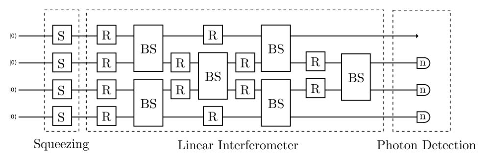
<figcaption class="paper-figure-caption"><b>Fig 1.</b> FIG. 1. GBS circuit schematic for GKP state preparation. The circuit consists of (left to right): single-mode squeezing gates on all nmodes input modes, a rectangular Clements beamsplitter interferometer, photon-number-resolving (PNR) detectors post-selecting on herald pattern m = (m1, . . . , mnmodes−1) on the first nmodes −1 modes, and the undetected output mode which collapses into the heralded GKP state.</figcaption>
</figure>
<figure class="paper-figure-card">
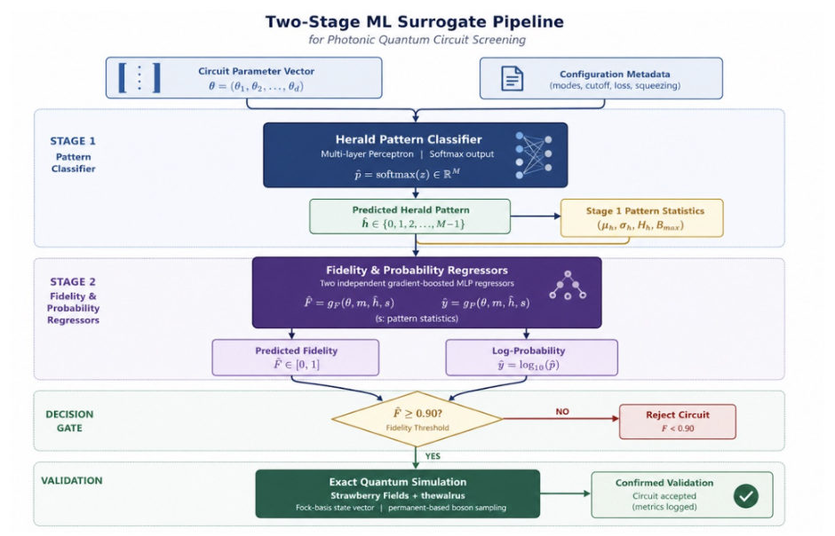
<figcaption class="paper-figure-caption"><b>Fig 2.</b> FIG. 2. Two-stage ML surrogate pipeline block diagram. Stage 1 (Pattern Classifier) takes the circuit parameter vector and configuration metadata as input and outputs the predicted herald pattern. Stage 2 (Fidelity and Probability Regressors) takes the same input augmented with the Stage 1 pattern statistics and outputs predicted fidelity F and log-probability y = log10(p). If F ≥0.90, the circuit is passed to exact quantum simulation (Strawberry Fields + thewalrus) for confirmed validation.</figcaption>
</figure>
<figure class="paper-figure-card">
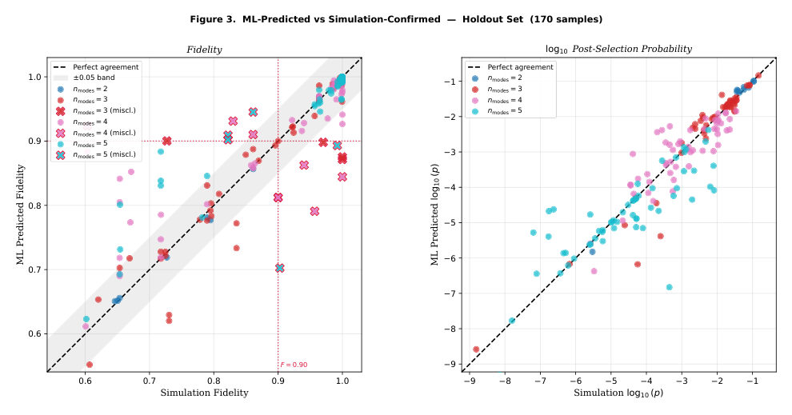
<figcaption class="paper-figure-caption"><b>Fig 3.</b> FIG. 3. Scatter plot of ML-predicted vs. simulation-confirmed fidelity (left) and log10 post-selection probability (right) on the 170-sample holdout set. Points are coloured by circuit mode count (nmodes ∈{3, 4, 5}). The dashed diagonal line indicates perfect agreement. The shaded band indicates ±0.05 fidelity error. Points above or below the F = 0.90 threshold line that are misclassified by the surrogate are highlighted.</figcaption>
</figure>
<figure class="paper-figure-card">
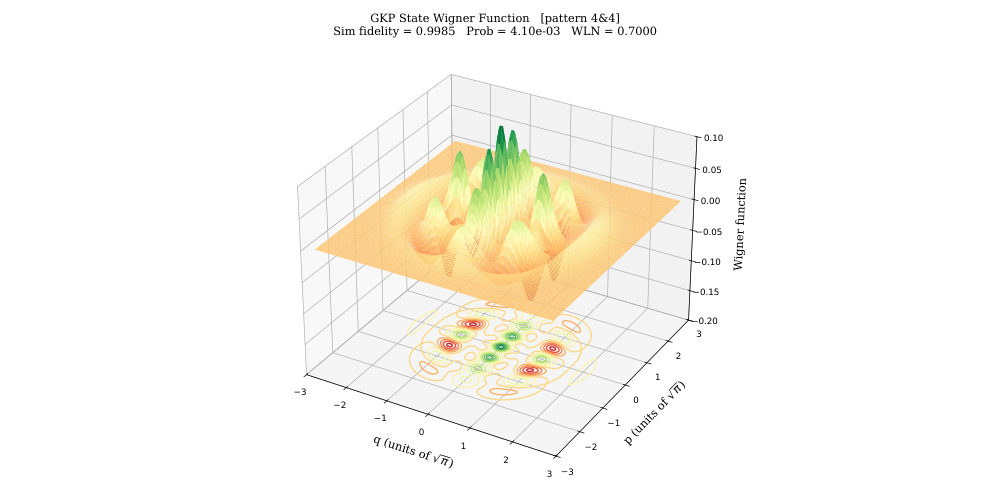
<figcaption class="paper-figure-caption"><b>Fig 4.</b> FIG. 4. Representative Wigner functions W(q, p) from the exact simulation step, plotted over q, p ∈[−3, 3] (in units of √π). (a) Circuit C1 (nmax = 8, three modes, ∆= 10 dB, WLN = 0.700): characteristic GKP lattice structure with prominent negativity (red/blue regions) at phase-space lattice points. (b) Circuit C7 (nmax = 8, three modes, ∆= 5 dB, WLN = 0.022): the GKP pattern is visually present but with negligible negativity, consistent with near-classical behaviour. (c) Circuit F1 (nmax = 12, five modes, ∆= 11 dB, sign +): the Wigner function bears no resemblance to a GKP state, consistent with Fsim = 0.307, confirming the catastrophic surrogate failure.</figcaption>
</figure>
</div>

<p><strong>Summary.</strong> The paper introduces an ML-based surrogate pipeline to efficiently screen candidate circuits for generating GKP states using Gaussian Boson Sampling. By predicting performance metrics like fidelity and success probability without calculating computationally prohibitive hafnians, it reduces simulation time by 90%. This framework allows researchers to focus expensive quantum simulations only on the most promising circuit designs.</p>
<p><strong>Why it may be interesting.</strong> This work directly addresses the practical scalability barrier in continuous variable quantum computing by replacing intractable exponential calculations with machine learning surrogates, a key theme for theoretical quantum information scientists.</p>
<details>
<summary>Detailed structure</summary>
<p><strong>Main problem.</strong> The core challenge is developing a scalable method to generate Gottesman-Kitaev-Preskill (GKP) states, which are crucial non-Gaussian resources for fault-tolerant photonic quantum computation.</p>
<p><strong>Main result.</strong> A two-stage Machine Learning surrogate pipeline was developed that predicts GKP circuit viability with 90.0% accuracy, drastically reducing the computational load by approximately 90% compared to full hafnian calculations.</p>
<p><strong>Method.</strong> The authors employed a cascade ML architecture (Stage 1 for pattern prediction, Stage 2 for fidelity/probability regression) acting as a gatekeeper before performing expensive, exact quantum simulations on promising candidates.</p>
<p><strong>Model / system.</strong> The system is photonic quantum computation utilizing Gaussian Boson Sampling (GBS). GKP states are encoded by leveraging the periodicity of the wavefunction lattice in phase space, making them robust against small errors.</p>
<p><strong>Key observables.</strong> GKP state fidelity ($F$), post-selection probability, Wigner function, and Wigner logarithmic negativity ($    ext{WLN}$).</p>
<p><strong>Important parameters / regimes.</strong> Number of optical modes (3–5), squeezing amplitudes/strengths ($\Delta$), and circuit parameters defining the interferometer structure.</p>
<p><strong>Assumptions / limitations.</strong> The surrogate is a computational filter, not a replacement for simulation; systematic failure modes exist when test circuits deviate from the training distribution's sign conventions for squeezing parameters.</p>
<p><strong>Figures summary.</strong> Figures likely compare ML-predicted vs. simulated fidelity and probability on holdout sets, visually confirming GKP state characteristics (e.g., Wigner functions) for successful versus failed candidates.</p>
<p><strong>Paper structure.</strong> The paper establishes the need for GKP states in photonic QC, identifies the computational bottleneck of hafnian evaluation in GBS, proposes the two-stage ML surrogate pipeline, details its training and application, and validates its efficiency by comparing predictions against full quantum simulations.</p>
</details>
<details>
<summary>Abstract</summary>
<p>Gottesman-Kitaev-Preskill (GKP) states are essential non-Gaussian resources for fault-tolerant photonic quantum computing, enabling logical qubit encoding with intrinsic robustness against errors. Several approaches to GKP state preparation have been explored, including measurement-based protocols in circuit QED and trapped-ion systems, cat-state breeding, and photon-subtraction schemes. However, these methods are either restricted to specific platforms or require deep non-Gaussian resource chains with exponentially low success probabilities. Gaussian Boson Sampling (GBS) offers a compelling all-photonic alternative by generating non-Gaussian states through measurement-induced nonlinearity, without the need for matter-based ancilla or active feedforward. Nevertheless, its practical implementation is limited by the exponential computational cost of evaluating matrix hafnians-#P-complete functions that govern photon-number probabilities. To address this challenge, we introduce a two-stage Histogram Gradient Boosting surrogate pipeline that predicts, without any hafnian computation, the optimal heralding pattern, circuit fidelity, and post-selection probability for candidate GBS circuits, while reserving exact quantum simulation exclusively for surrogate-selected candidates. Trained on circuit configurations across 3-5 optical modes, the surrogate achieves 90.0% GKP-detection accuracy on a held-out set, representing a 23.7 percentage-point improvement over the baseline, with a fidelity mean absolute error of 0.032 and a log-scale post-selection probability $R^2 = 0.837$, reducing the total simulation burden by approximately 90%.</p>
</details>
<p><sub><a href="#top">↑ back to top</a></sub></p>

<p><a id="paper-2606.05297"></a></p>
<h3 id="continuous-variable-adapt-vqe-for-bosonic-lattice-models"><a href="http://arxiv.org/abs/2606.05297v1">Continuous-variable ADAPT-VQE for bosonic lattice models</a></h3>
<p><strong>Authors:</strong> Dimitrios Athanasakos, Gloria Tejedor-García, Jack Y. Araz, Mafalda Ramôa, Bharath Sambasivam, Sophia E. Economou, Felix Ringer<br>
<strong>Type:</strong> theory · <strong>Category:</strong> quantum information and computing · <strong>PDF:</strong> <a href="https://arxiv.org/pdf/2606.05297v1">https://arxiv.org/pdf/2606.05297v1</a><br>
<strong>Analysis basis:</strong> full PDF text, analyzed in chunks
<strong>Topic relevance:</strong> <code>analog quantum simulation</code> <strong>3/5</strong> · <code>correlated cavity matter</code> <strong>1/5</strong> · <code>non-equilibrium dynamics</code> <strong>1/5</strong></p>
<div class="figure-strip-hint">↔ Scroll figures horizontally</div>
<div class="paper-figures-scroll">
<figure class="paper-figure-card">
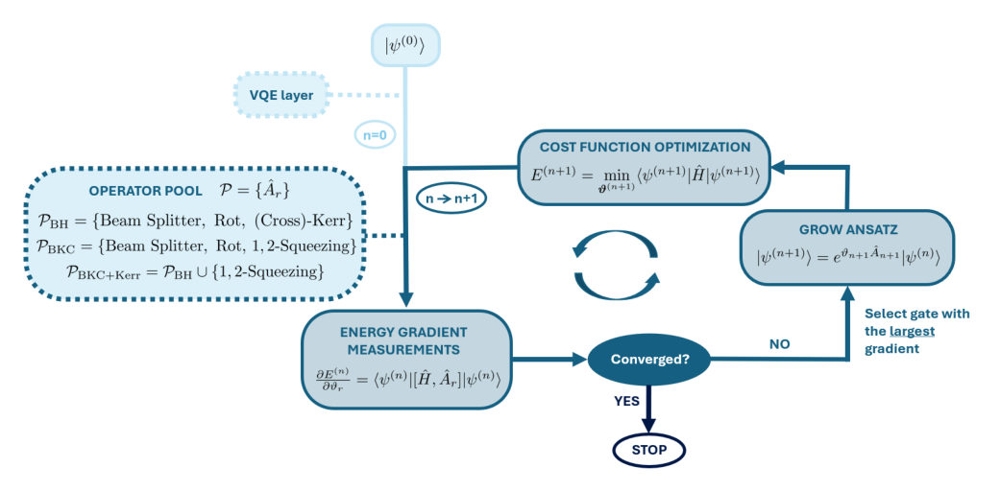
<figcaption class="paper-figure-caption"><b>Fig 1.</b> FIG. 1: Schematic illustration of the CV-ADAPT-VQE ground state preparation algorithm presented in this work. The state after n iterations is denoted by |ψ(n)⟩, which depends on the variational parameters of n gates, collectively denoted by ϑ (n). Depending on the lattice Hamiltonian, we choose a suitable operator pool that incorporates sym- metry constraints of the ground state.</figcaption>
</figure>
<figure class="paper-figure-card">
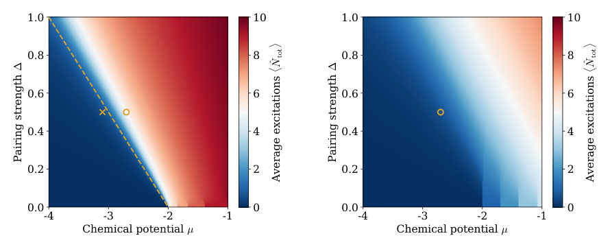
<figcaption class="paper-figure-caption"><b>Fig 2.</b> FIG. 2: Expectation value of the total boson number across the lattice ⟨ˆNtot⟩for the ground state of the BKC model without (left) and with an additional on-site Kerr interaction (right). We show the result for different values of the model parameters ∆and µ for a lattice with NS = 3 sites, J = 1, U = −1 for the interaction term, periodic boundary conditions, and a local Hilbert space truncation of D = 6. The dashed golden line in the left panel indicates the stability condition, while the markers × and ◦denote the parameter choices (∆= 0.5, µ = −3.1) and (∆= 0.5, µ = −2.7), respectively, which are used for the variational ground state preparation presented in section V.</figcaption>
</figure>
<figure class="paper-figure-card">
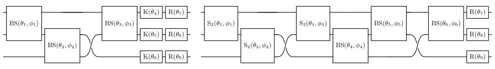
<figcaption class="paper-figure-caption"><b>Fig 3.</b> FIG. 3: Hamiltonian-based VQE ans¨atze for the Bose-Hubbard model (left) and the bosonic Kitaev chain (right) for NS = 3 lattice sites and periodic boundary conditions. For the bosonic Kitaev chain with an additional on-site Kerr interaction, another set of corresponding single-qumode Kerr gates is included previous to the rotation gates.</figcaption>
</figure>
<figure class="paper-figure-card">
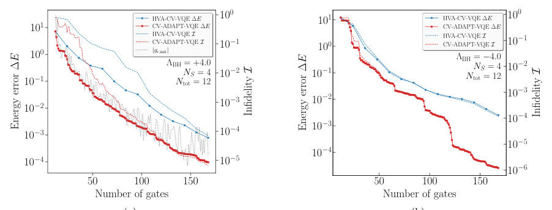
<figcaption class="paper-figure-caption"><b>Fig 4.</b> FIG. 4: The energy difference between the variational energy and the exact ground-state energy ∆E (solid lines, left axis), and the infidelity I (dashed lines, right axis), is shown as a function of the number of variational gates for the BH model. Panels (a) and (b) show the results for the attractive (ΛBH = +4.0) and repulsive (ΛBH = −4.0) BH models, respectively, for NS = 4 lattice sites and Ntot = 12 bosons with a local qumode cutoff of D = 13. As an example, in panel (a), we also plot the magnitude of the gradient associated with the gate selected by ADAPT |gr,init| (gray dotted line), i.e., the gate with the largest gradient at each iteration, using the scale of the left axis for...</figcaption>
</figure>
<figure class="paper-figure-card">
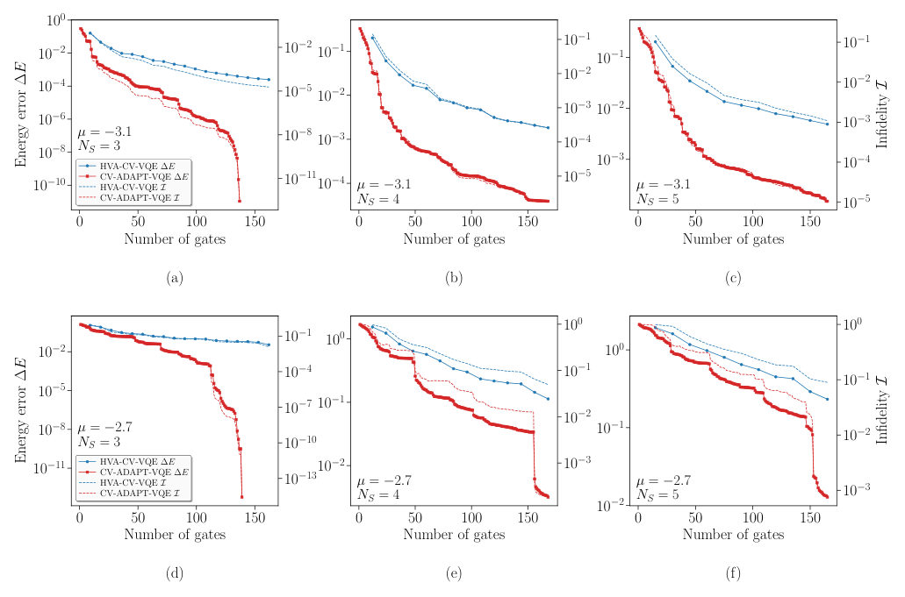
<figcaption class="paper-figure-caption"><b>Fig 5.</b> FIG. 5: The energy difference between the variational energy and the exact ground-state energy (solid lines, left axis), together with the infidelity (dashed lines, right axis), for the HVA-CV-VQE (blue) and CV-ADAPT-VQE (red) algorithms as a function of the number of gates for the BKC model. The model parameter choices for the two rows are µ = −3.1 (top) and µ = −2.7 (bottom), which are in the unstable and stable regimes, respectively, see Fig. 2. In each row, the number of lattice sites NS increases from 3 to 5 (left to right). For all simulations, the local qumode cutoff is D = 6.</figcaption>
</figure>
</div>

<p><strong>Summary.</strong> The paper presents Continuous-variable ADAPT-VQE to find ground states for bosonic lattice models like the Bose-Hubbard and Kitaev chains. It demonstrates that this continuous-variable approach generates significantly shallower quantum circuits than standard VQE methods. By incorporating symmetry constraints and advanced optimization techniques, it offers a powerful tool for simulating complex condensed matter physics problems.</p>
<p><strong>Why it may be interesting.</strong> This work directly addresses the practical implementation challenges of simulating interacting quantum many-body systems on near-term quantum hardware by optimizing the required circuit depth using adaptive techniques tailored for bosonic Hamiltonians.</p>
<details>
<summary>Detailed structure</summary>
<p><strong>Main problem.</strong> The primary goal is to efficiently prepare the ground state of bosonic lattice models using quantum algorithms, specifically addressing circuit depth limitations.</p>
<p><strong>Main result.</strong> The Continuous-variable ADAPT-VQE approach was shown to yield significantly shallower circuits compared to traditional Hamiltonian-based VQE methods for these systems.</p>
<p><strong>Method.</strong> The authors employ CV-ADAPT-VQE, an adaptive variational quantum eigensolver that constructs the ansatz by selecting symmetry-preserving bosonic operators from a tailored pool. This is contrasted with HVA-CV-VQE, which uses unitaries derived directly from the Hamiltonian terms.</p>
<p><strong>Model / system.</strong> The study focuses on bosonic lattice models, including the Bose-Hubbard (BH) model and the bosonic Kitaev chain (BKC), sometimes extended with an on-site Kerr interaction. These systems are modeled using continuous variables described by quadrature operators ($\hat{q}, \hat{p}$).</p>
<p><strong>Key observables.</strong> Ground state energy expectation value ($E$), circuit depth, fidelity ($I$), and the total boson number $\langle \hat{N}_{tot} 
angle$.</p>
<p><strong>Important parameters / regimes.</strong> System size ($N_S$), local Fock cutoff dimension ($D$), interaction strengths ($J, U, \Delta$), and chemical potential ($\mu$).</p>
<p><strong>Assumptions / limitations.</strong> Classical simulations require truncating the infinite Hilbert space to a finite dimension $D$. The ADAPT-VQE relies on constructing an ansatz from operators respecting known global symmetries.</p>
<p><strong>Figures summary.</strong> Figures illustrate energy error ($\Delta E$) and infidelity ($I$) convergence versus gate count for BH and BKC models, comparing standard vs. tiled operator pools, and showing the impact of warm-up circuits and Hessian recycling on optimization steps.</p>
<p><strong>Paper structure.</strong> The paper introduces CV-ADAPT-VQE for bosonic systems (BH/BKC), details the mathematical framework using continuous variables, compares its performance against HVA-CV-VQE, and discusses advanced optimizations like operator tiling and Hessian recycling to improve resource scaling.</p>
</details>
<details>
<summary>Abstract</summary>
<p>We present a continuous-variable adaptive variational quantum eigensolver (CV-ADAPT-VQE). As concrete examples, we consider the ground-state preparation for (i) the Bose-Hubbard model and (ii) the bosonic Kitaev chain, including its extension with an on-site Kerr interaction. The former conserves the total boson number, while the latter conserves global parity. We construct symmetry-preserving operator pools tailored to each case and show, using GPU-based classical simulations, that CV-ADAPT-VQE results in significantly shallower circuits compared to Hamiltonian-based VQE approaches. Our results point toward direct applications in quantum simulations of condensed-matter systems, quantum chemistry, and high-energy physics.</p>
</details>
<p><sub><a href="#top">↑ back to top</a></sub></p>

<p><a id="paper-2606.06204"></a></p>
<h3 id="semidefinite-programming-hierarchies-for-classically-simulable-state-families"><a href="http://arxiv.org/abs/2606.06204v1">Semidefinite-programming hierarchies for classically simulable state families</a></h3>
<p><strong>Authors:</strong> Mengyan Li, Yanning Jia, Fenzhuo Guo, Haifeng Dong, Sujuan Qin, Fei Gao<br>
<strong>Type:</strong> theory · <strong>Category:</strong> quantum information and computing · <strong>PDF:</strong> <a href="https://arxiv.org/pdf/2606.06204v1">https://arxiv.org/pdf/2606.06204v1</a><br>
<strong>Analysis basis:</strong> full PDF text, analyzed in chunks
<strong>Topic relevance:</strong> <code>quantum measurements</code> <strong>3/5</strong> · <code>entanglement &amp; information structure</code> <strong>1/5</strong> · <code>measurement-induced transitions</code> <strong>1/5</strong></p>
<div class="figure-strip-hint">↔ Scroll figures horizontally</div>
<div class="paper-figures-scroll">
<figure class="paper-figure-card">
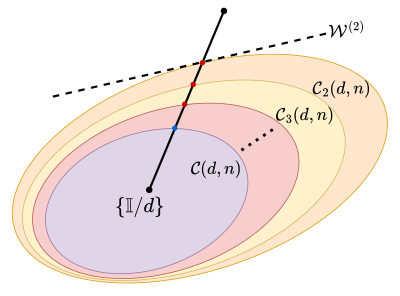
<figcaption class="paper-figure-caption"><b>Fig 1.</b> FIG. 1. Geometric illustration of the hierarchy bounds for criti- cal visibility. The black line represents the depolarizing trajectory {Λv(ρ)}v∈[0,1], interpolating between the maximally mixed family {I/d} and the target family ρ. Intersections of this trajectory with differ- ent hierarchy levels determine the visibility bounds χℓ, shown as red points. As the hierarchy level increases, these bounds decrease monotonically and converge to the exact critical visibility χ, shown in blue. The dashed line illustrates an affine witness separating the target family from a relaxation level.</figcaption>
</figure>
</div>

<p><strong>Summary.</strong> This paper develops a complete Semidefinite Programming (SDP) hierarchy to rigorously characterize classically simulable families of quantum states. By reformulating classical simulability as a POVM feasibility problem, they provide computable upper bounds on quantum advantages like critical visibility. This offers a systematic convex-optimization framework for certifying the nonclassical nature of quantum resources.</p>
<p><strong>Why it may be interesting.</strong> This work provides a powerful, systematic convex-optimization tool for certifying when quantum correlations are genuinely nonclassical, which is fundamental for understanding the limits of quantum computation and communication protocols.</p>
<details>
<summary>Detailed structure</summary>
<p><strong>Main problem.</strong> The core problem is developing a complete mathematical characterization of quantum state families that are classically simulable, which signifies the absence of irreducible quantum advantage.</p>
<p><strong>Main result.</strong> The authors establish a complete Semidefinite Programming (SDP) hierarchy that characterizes classical simulability by relating it to the projective simulability of auxiliary Positive-Operator-Valued Measures (POVMs).</p>
<p><strong>Method.</strong> They reformulate classical simulability as a feasibility problem involving deterministic response functions and POVMs, solving this using an asymptotically complete SDP relaxation hierarchy.</p>
<p><strong>Model / system.</strong> The study concerns quantum state families $\{
ho_x\}_{x=1}^n$ on a $d$-dimensional Hilbert space. The simulation aspect is modeled by checking if the measurement statistics admit a local hidden-variable model, which is mathematically equivalent to POVM simulability.</p>
<p><strong>Key observables.</strong> Critical classical visibility ($\chi(
ho)$), and the feasibility of SDP constraints derived from the hierarchy levels $\ell$.</p>
<p><strong>Important parameters / regimes.</strong> The dimension $d$ of the Hilbert space, the number of states $n$, and the relaxation level $\ell \ge 2$.</p>
<p><strong>Assumptions / limitations.</strong> The analysis relies on establishing asymptotic completeness for the SDP hierarchy, which is proven using techniques related to the quantum de Finetti theorem.</p>
<p><strong>Figures summary.</strong> Figures illustrate the geometric convergence of the SDP bounds ($\chi_\ell(
ho)$) towards the true critical visibility $\chi$ for various symmetric state families.</p>
<p><strong>Paper structure.</strong> The paper progresses by defining classical simulability, reducing it to POVM simulability, developing the SDP hierarchy (both canonical and aggregated lifts), proving its asymptotic completeness, and finally applying this framework to compute bounds on quantum advantage measures like critical visibility.</p>
</details>
<details>
<summary>Abstract</summary>
<p>Identifying whether a state family admits an irreducible quantum advantage is a fundamental task in quantum resource theory and quantum information processing. Here we study classically simulable state families, namely those residing within the convex hull of pairwise commuting families and therefore admitting a classical explanation. We develop a complete semidefinite-programming (SDP) hierarchy characterizing the set of classically simulable state families in arbitrary finite dimension. The key step is to reformulate classical simulability as a feasibility problem over deterministic response functions and auxiliary positive-operator-valued measures (POVMs) simulable by rank-one projective measurements. We establish a complete SDP hierarchy for rank-one projectively simulable POVMs and transfer the resulting characterization to state families, yielding both primal feasibility tests and dual affine witnesses certifying failure of classical simulability. Applying the hierarchy to state families mixed with depolarizing noise gives computable upper bounds on the critical classical visibility, which are matched by explicit classical simulations in several symmetric examples. These results provide a systematic convex-optimization framework for certifying classical simulability of quantum state families.</p>
</details>
<p><sub><a href="#top">↑ back to top</a></sub></p>

<p><a id="paper-2606.06389"></a></p>
<h3 id="revealing-quantum-geometry-effects-in-magic-angle-twisted-bilayer-graphene-using-the-circular-photogalvanic-effect"><a href="http://arxiv.org/abs/2606.06389v1">Revealing quantum geometry effects in magic angle twisted bilayer graphene using the circular photogalvanic effect</a></h3>
<p><strong>Authors:</strong> Eylon Persky, Leonie Parisot, Minhao He, Jiaqi Cai, Takashi Taniguchi, Kenji Watanabe, Pierre A. Pantaleon, Francisco Guinea, Xiaodong Xu, Aharon Kapitulnik<br>
<strong>Type:</strong> both · <strong>Category:</strong> strongly correlated electrons · <strong>PDF:</strong> <a href="https://arxiv.org/pdf/2606.06389v1">https://arxiv.org/pdf/2606.06389v1</a><br>
<strong>Analysis basis:</strong> full PDF text, analyzed in chunks
<strong>Topic relevance:</strong> <code>analog quantum simulation</code> <strong>2/5</strong> · <code>driven-dissipative phase transition</code> <strong>2/5</strong> · <code>non-equilibrium dynamics</code> <strong>2/5</strong> · <code>Keldysh / 2PI / non-Gaussian methods</code> <strong>1/5</strong> · <code>methods for driven-dissipative</code> <strong>1/5</strong> · <code>non-equilibrium universality</code> <strong>1/5</strong> · <code>quantum optics experiment</code> <strong>1/5</strong> · <code>spintronics-quantum-optics interface</code> <strong>1/5</strong></p>
<div class="figure-strip-hint">↔ Scroll figures horizontally</div>
<div class="paper-figures-scroll">
<figure class="paper-figure-card">
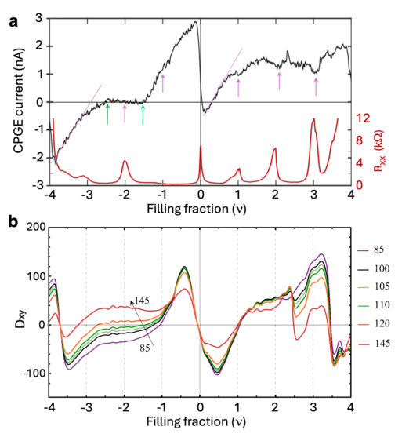
<figcaption class="paper-figure-caption"><b>Fig 1.</b> FIG. 1: Top: Measured CPGE current vs. band filling. For comparison we show the longitudinal conductivity that tracks the topological Fermi surface effects. Arrows and straight lines point to the key correlated states in the band. Bottom: Calculation of Berry-Curvature Dipole (BCD) with a uniaxial 0.3 % heterostrain along the K-K′ direction. Calculation parameters: Twist-angle, θ = 1.05◦, sublattice potential ∆m = 10 meV, interlayer moire potentials u = 79.7 meV and u′ = 97.5 meV, ℏvF = −2.13a with a = 0.246 nm, dielectric constant ε = 6 and double-gate distance dg = 40 nm. The color legend shows the BCD orientation with respect to the sample.</figcaption>
</figure>
<figure class="paper-figure-card">
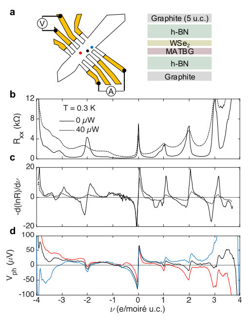
<figcaption class="paper-figure-caption"><b>Fig 2.</b> FIG. 2: Schematic of the measurement configuration. For photocurrent measurement, the device is shorted in series with a current amplifier, which measures the current that is induced by the light. The left side shows the van der Waals stack of our dual-gated sample. (b) Longitudinal resistance as a function of carrier density taken at T = 0.3 K with and without unpolarized light (incident power, 40 µW). (c) The photocurrent generated by unpolarized light, compared to the log derivative of the resistance (red curve, proportional to the thermopower).</figcaption>
</figure>
<figure class="paper-figure-card">
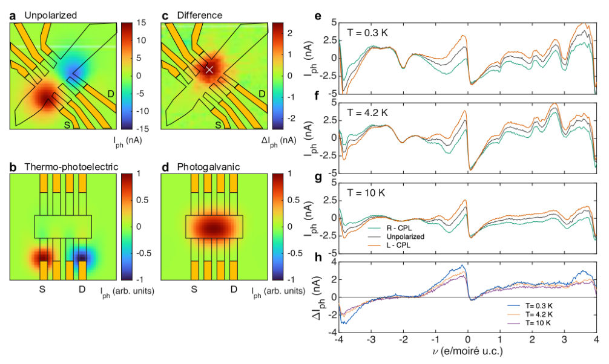
<figcaption class="paper-figure-caption"><b>Fig 3.</b> FIG. 3: (a) Experimental photocurrent map taken at filling ν = −0.5 unpolarized light. The device is overlaid on the image based on a simultaneously acquired reflectivity map, and the source and drain electrodes are indicated. (b) Calculated photocurrent map for a Hall bar geometry assuming the photo-induced current originates from local heating through the thermoelectric effect. (c) Difference map of two photocurrent images taken with right- and left-CPL at ν = −0.5. (d) Calculated photocurrent map assuming the photo-induced current originates from a CPGE. (e) Carrier density dependence of the photocurrent for unpolarized and CPL. The beam position is indicted by the cross on panel c. (f)...</figcaption>
</figure>
</div>

<p><strong>Summary.</strong> This work investigates quantum geometry effects in magic angle twisted bilayer graphene by measuring the circular photogalvanic effect. By carefully separating this effect from thermal contributions, the authors map out how the CPGE vanishes at specific electron fillings. This vanishing signals a fundamental symmetry breaking mechanism strongly linked to the material's Berry curvature dipole structure.</p>
<p><strong>Why it may be interesting.</strong> While focused on condensed matter, the use of optical pumping to probe geometric phases (Berry curvature) in a correlated system like MATBG touches upon non-equilibrium quantum dynamics relevant to open quantum systems and topological physics.</p>
<details>
<summary>Detailed structure</summary>
<p><strong>Main problem.</strong> The study aims to reveal quantum geometry effects, specifically those related to the Berry curvature dipole, in magic angle twisted bilayer graphene (MATBG) using the circular photogalvanic effect (CPGE).</p>
<p><strong>Main result.</strong> A robust CPGE is observed over wide doping ranges, but it vanishes precisely in the filling range $-2.5 &lt; 
u &lt; -1.5$, suggesting a novel symmetry breaking mechanism linked to the Berry curvature dipole structure.</p>
<p><strong>Method.</strong> The research combines photo-transport measurements using circularly polarized light with theoretical calculations based on the Berry curvature dipole tensor and mean-field approximations.</p>
<p><strong>Model / system.</strong> The physical system is MATBG, encapsulated in a van der Waals stack. Theoretical analysis utilizes models incorporating strain and calculating electronic structure properties like the Berry curvature dipole within a Hartree formalism.</p>
<p><strong>Key observables.</strong> Circular Photogalvanic Effect (CPGE) current ($\Delta I_{ph}$), longitudinal resistance ($R_{xx}$), and photovoltage/thermoelectric voltage measurements.</p>
<p><strong>Important parameters / regimes.</strong> Band filling ($
u$), temperature ($T$), incident light wavelength ($\lambda = 1550$ nm, $\hbar\omega \approx 0.8$ eV).</p>
<p><strong>Assumptions / limitations.</strong> The analysis assumes the observed zero-CPGE plateau correlates with the BCD mechanism and that photoexcited carriers cascade into the flat band in a manner describable by modified Shockley-Ramo theorems.</p>
<p><strong>Figures summary.</strong> Figures show measured CPGE current vs. filling compared to conductivity tracking, alongside theoretical calculations of the Berry-Curvature Dipole (BCD) under strain.</p>
<p><strong>Paper structure.</strong> The paper systematically measures photocurrents using polarization dependence to isolate the CPGE from thermoelectric effects. It then compares these experimental results across various doping levels and temperatures against theoretical predictions derived from the BCD formalism, pinpointing specific regimes of symmetry breaking.</p>
</details>
<details>
<summary>Abstract</summary>
<p>We report a photocurrent studies of a magic angle twisted bilayer graphene device using near infrared light. Through photocurrent imaging and polarization dependence, we separate the photo-thermoelectric effect from the photogalvanic effect. We observe a circular photogalvanic effect (CPGE) over a wide range of doping and temperature. The CPGE at normal incidence constraints the symmetry of the system to C$_1$, and points to a Berry curvature dipole, in agreement with theoretical predictions for strained graphene. Remarkably, the CPGE vanishes for filling $-2.5 < ν< -1.5$, suggesting an additional symmetry breaking in that regime. Insight into this effect is obtained through Berry curvature dipole calculations, which emphasize a novel symmetry breaking effect near $ν=-2$.</p>
</details>
<p><sub><a href="#top">↑ back to top</a></sub></p>

<p><a id="paper-2606.06318"></a></p>
<h3 id="reliability-of-asymptotic-work-extraction"><a href="http://arxiv.org/abs/2606.06318v1">Reliability of asymptotic work extraction</a></h3>
<p><strong>Authors:</strong> Kaito Watanabe, Bartosz Regula, Marco Tomamichel, Ryuji Takagi<br>
<strong>Type:</strong> theory · <strong>Category:</strong> statistical mechanics · <strong>PDF:</strong> <a href="https://arxiv.org/pdf/2606.06318v1">https://arxiv.org/pdf/2606.06318v1</a><br>
<strong>Analysis basis:</strong> full PDF text, analyzed in chunks
<strong>Topic relevance:</strong> <code>correlated / nonlocal dissipation</code> <strong>2/5</strong> · <code>driven-dissipative phase transition</code> <strong>2/5</strong> · <code>entanglement &amp; information structure</code> <strong>2/5</strong> · <code>Keldysh / 2PI / non-Gaussian methods</code> <strong>1/5</strong> · <code>methods for driven-dissipative</code> <strong>1/5</strong> · <code>non-equilibrium dynamics</code> <strong>1/5</strong> · <code>non-equilibrium universality</code> <strong>1/5</strong></p>
<div class="figure-strip-hint">↔ Scroll figures horizontally</div>
<div class="paper-figures-scroll">
<figure class="paper-figure-card">
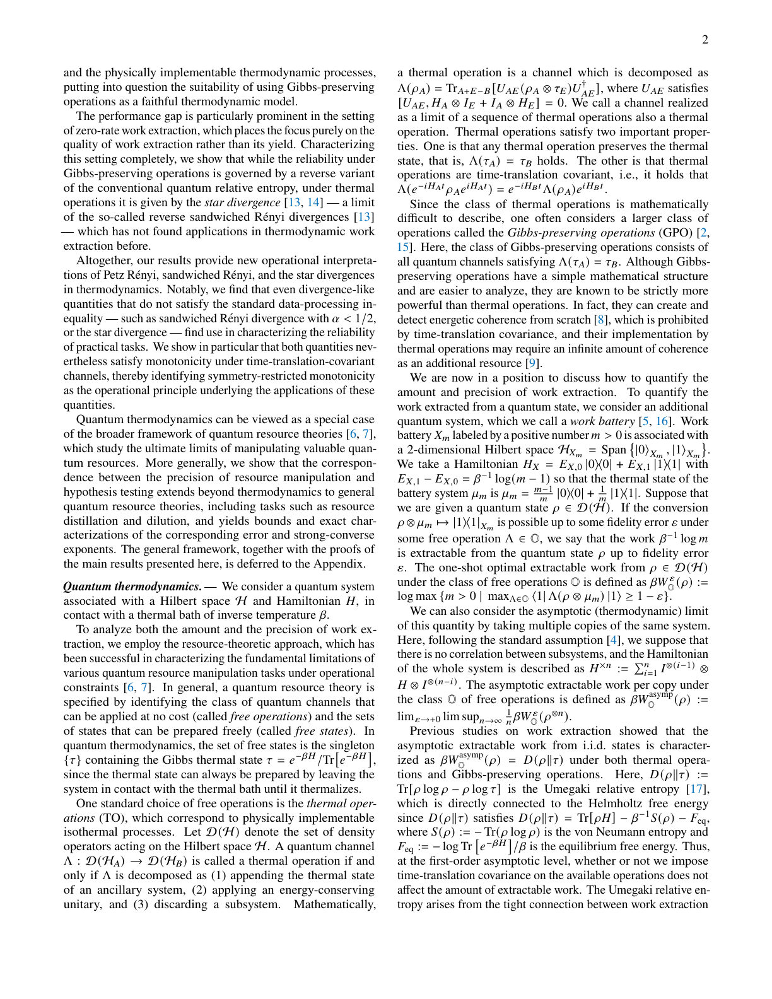
<figcaption class="paper-figure-caption"><b>Fig 1.</b> Low-resolution page preview, page 2</figcaption>
</figure>
<figure class="paper-figure-card">
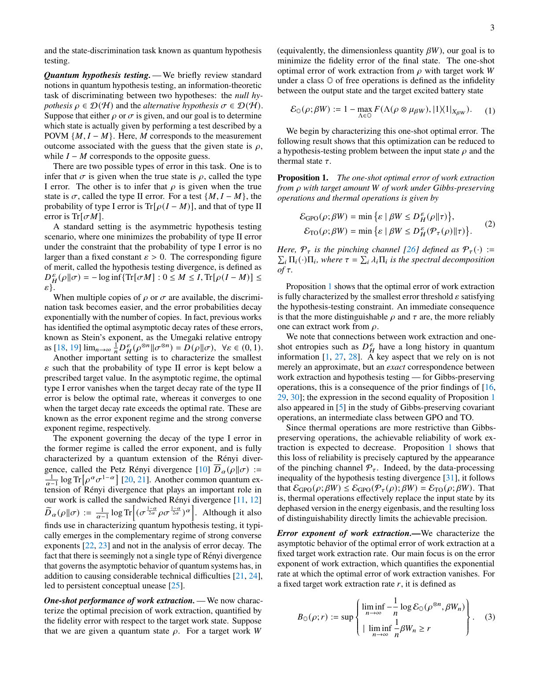
<figcaption class="paper-figure-caption"><b>Fig 2.</b> Low-resolution page preview, page 3</figcaption>
</figure>
<figure class="paper-figure-card">
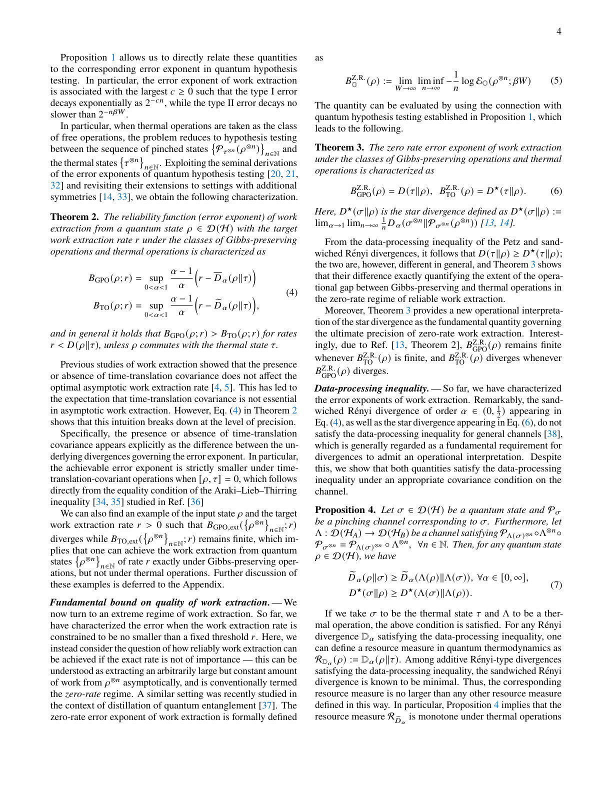
<figcaption class="paper-figure-caption"><b>Fig 3.</b> Low-resolution page preview, page 4</figcaption>
</figure>
<figure class="paper-figure-card">
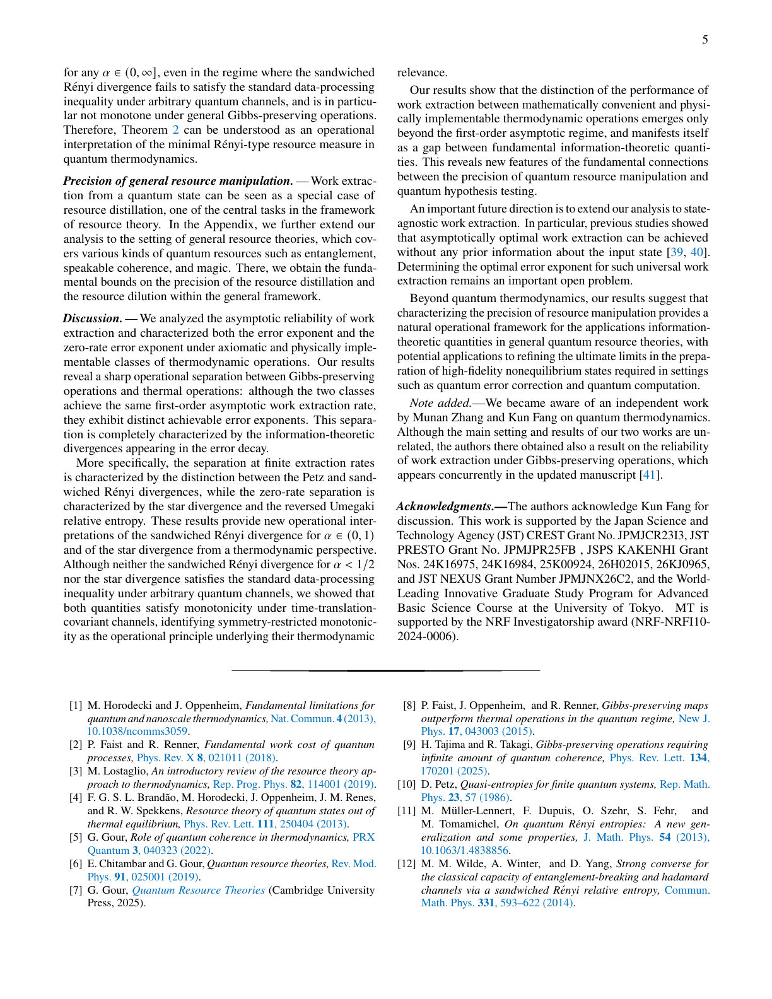
<figcaption class="paper-figure-caption"><b>Fig 4.</b> Low-resolution page preview, page 5</figcaption>
</figure>
<figure class="paper-figure-card">
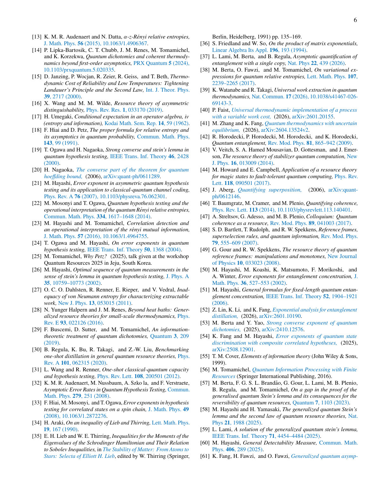
<figcaption class="paper-figure-caption"><b>Fig 5.</b> Low-resolution page preview, page 6</figcaption>
</figure>
</div>

<p><strong>Summary.</strong> This work rigorously compares two models for free operations—Gibbs-preserving and thermal—in the context of quantum work extraction. It demonstrates that while both yield the same asymptotic work rate, their reliability (error exponent) differs significantly. This reveals a fundamental operational gap, suggesting that physically constrained processes are more limited than mathematically convenient ones.</p>
<p><strong>Why it may be interesting.</strong> It provides a deep theoretical understanding of operational constraints in quantum thermodynamics, showing that mathematical convenience (GPO) can mask physical limitations (TO) when precision is required.</p>
<details>
<summary>Detailed structure</summary>
<p><strong>Main problem.</strong> The paper challenges the assumption that the optimal asymptotic work extraction rate is universally characterized by the Helmholtz free energy when comparing different classes of allowed quantum operations.</p>
<p><strong>Main result.</strong> A significant operational gap exists between Gibbs-preserving operations and physically realizable thermal operations, particularly concerning the reliability (error exponent) of the extraction process in the zero-rate limit.</p>
<p><strong>Method.</strong> The analysis uses resource theory concepts applied to work extraction, comparing performance metrics derived from quantum hypothesis testing divergences (Petz vs. sandwiched Rényi entropies).</p>
<p><strong>Model / system.</strong> The study models work extraction from a general quantum state ($
ho$) coupled to an auxiliary 'work battery' ($X_m$), analyzed under two classes of free operations: Gibbs-preserving operations (GPO) and physically motivated thermal operations (TO).</p>
<p><strong>Key observables.</strong> Optimal asymptotic error exponents ($B_{GPO,ext}, B_{TO,ext}$) and the zero-rate error exponent ($   ext{BZ.R.}$), quantified by various quantum relative entropies.</p>
<p><strong>Important parameters / regimes.</strong> The inverse temperature $eta$, the rate of work extraction $r$, and the coherence/incoherence condition $[
ho, 	au]$.</p>
<p><strong>Assumptions / limitations.</strong> The analysis relies on comparing asymptotic limits derived from generalized Rényi divergences and assumes specific covariance conditions for certain data-processing inequalities to hold.</p>
<p><strong>Figures summary.</strong> Figures illustrate the strict separation of reliability functions ($   ext{H}_r &gt; e^{  ext{H}_r}$) when quantum states exhibit coherence, quantifying the operational gap between GPO and TO.</p>
<p><strong>Paper structure.</strong> The paper progresses by first establishing the equivalence of work definitions at the asymptotic rate (first order), then rigorously comparing error exponents in fixed-rate regimes, and finally focusing on the zero-rate limit to quantify the fundamental difference between operation classes.</p>
</details>
<details>
<summary>Abstract</summary>
<p>Extracting work from quantum states is a fundamental task in quantum thermodynamics. Previous studies have primarily focused on determining the best achievable rate of work extraction, and remarkably, this characterization appeared to remain unchanged regardless of the choice of allowed processes: whether one considers the operationally motivated class of energy-conserving thermal operations, or the axiomatic class of Gibbs-preserving operations, the optimal extractable work is given by the Helmholtz free energy. Here, we challenge this perspective, showing that a more refined analysis of the asymptotic performance of work extraction reveals significant differences in the performance for the two different classes of free operations. Precisely, we focus on the trade-off between the extraction rate and its reliability, characterized by the optimal asymptotic speed at which the extraction error can be suppressed. We establish that the reliability of Gibbs-preserving operations and of thermal operations are respectively characterized by the Petz and the sandwiched Rényi relative entropies, demonstrating that the former in general strictly outperforms the latter, and providing new interpretations of several information-theoretic divergences. Our analysis reveals that operational constraints such as energy conservation impose stronger limitations on the achievable precision of quantum tasks than can be inferred from their asymptotic rates, thereby questioning the use of Gibbs-preserving operations as a mathematically convenient substitute for the physically realizable thermal processes.</p>
</details>
<p><sub><a href="#top">↑ back to top</a></sub></p>

<p><a id="paper-2606.05746"></a></p>
<h3 id="majorana-like-fermion-physics-emergence-of-topologically-protected-vortical-states-in-graphene-interacting-with-an-electromagnetic-field"><a href="http://arxiv.org/abs/2606.05746v1">Majorana-like fermion physics: Emergence of topologically protected vortical states in graphene interacting with an electromagnetic field</a></h3>
<p><strong>Authors:</strong> H. V. Grushevskaya, George Krylov<br>
<strong>Type:</strong> theory · <strong>Category:</strong> other · <strong>PDF:</strong> <a href="https://arxiv.org/pdf/2606.05746v1">https://arxiv.org/pdf/2606.05746v1</a><br>
<strong>Analysis basis:</strong> full PDF text, analyzed in chunks
<strong>Topic relevance:</strong> <code>Kondo &amp; dissipative impurity</code> <strong>2/5</strong> · <code>analog quantum simulation</code> <strong>2/5</strong> · <code>Keldysh / 2PI / non-Gaussian methods</code> <strong>1/5</strong> · <code>correlated / nonlocal dissipation</code> <strong>1/5</strong> · <code>driven-dissipative phase transition</code> <strong>1/5</strong> · <code>interference shaping light</code> <strong>1/5</strong> · <code>methods for driven-dissipative</code> <strong>1/5</strong></p>
<div class="figure-strip-hint">↔ Scroll figures horizontally</div>
<div class="paper-figures-scroll">
<figure class="paper-figure-card">
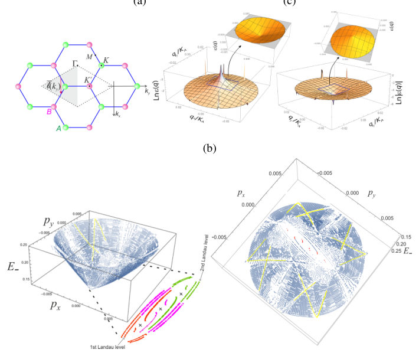
<figcaption class="paper-figure-caption"><b>Fig 1.</b> FIG. 1: (a) Graphene hexagonal lattice of Brillouin zone. A change ⃗γ h ⃗l(ky) i in the flux of non-Abelian gauge</figcaption>
</figure>
<figure class="paper-figure-card">
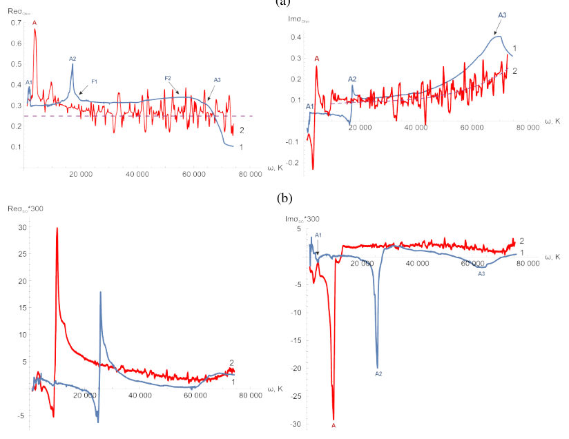
<figcaption class="paper-figure-caption"><b>Fig 2.</b> FIG. 2: Real (left) and imaginary (right) of optical (a) and Hall (b) complex conductivity for graphene Majorana-</figcaption>
</figure>
<figure class="paper-figure-card">
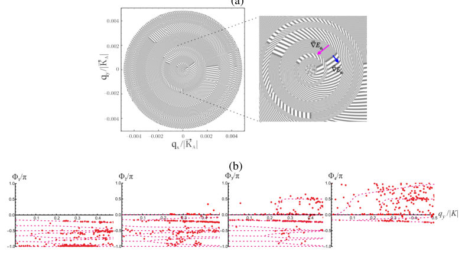
<figcaption class="paper-figure-caption"><b>Fig 3.</b> FIG. 3: (a) A spin–orbit texture of the bands on momentum scales q/K = 0.002 in contour plots and a model of</figcaption>
</figure>
<figure class="paper-figure-card">
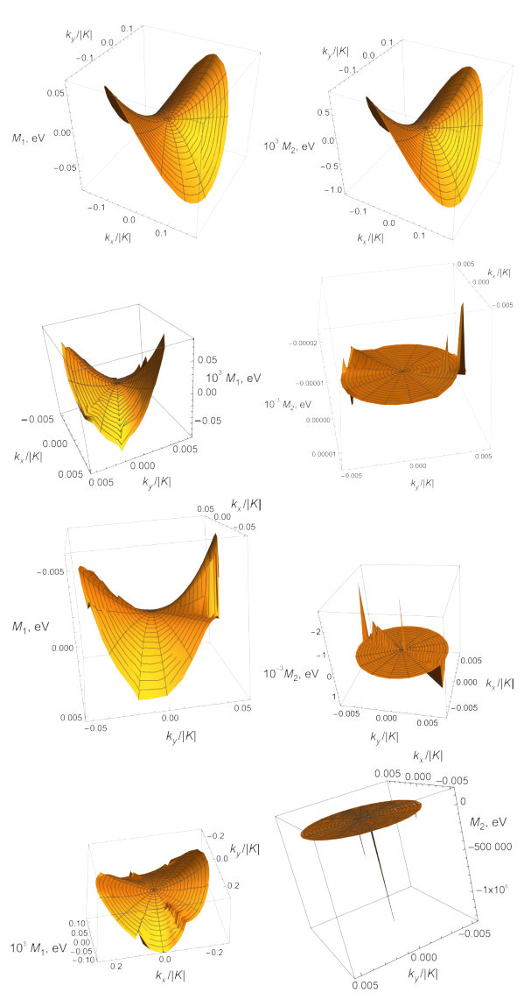
<figcaption class="paper-figure-caption"><b>Fig 4.</b> FIG. 4: Two eigenvalues, M1 and M2, of the Majorana mass term at zero (a) and non-zero (b–d) gauge fields, without</figcaption>
</figure>
</div>

<p><strong>Summary.</strong> This paper explores Majorana-like fermion physics in graphene interacting with magnetic fields, predicting the formation of topologically protected vortical states. The key finding is that these states manifest as three distinct Fano resonances in the optical conductivity, establishing a theoretical link between topological matter and neutrino oscillation phenomenology.</p>
<p><strong>Why it may be interesting.</strong> While focused on condensed matter topology, the explicit analogy drawn to three-flavour neutrino oscillations provides a rich theoretical framework for understanding how fundamental particle physics concepts can manifest as measurable electronic band structure features in solid-state systems.</p>
<details>
<summary>Detailed structure</summary>
<p><strong>Main problem.</strong> The study investigates the emergence of topologically protected vortical states in graphene when subjected to an external electromagnetic field, linking Majorana-like fermion physics to observable optical responses.</p>
<p><strong>Main result.</strong> The model predicts that three distinct topological resonances appear in the optical conductivity, providing evidence for three non-trivial Majorana-like modes whose behavior mimics a toy model for neutrino oscillations.</p>
<p><strong>Method.</strong> Theoretical analysis involving constructing and solving coupled Hamiltonian equations for Majorana-like fermions, followed by calculating the complex dielectric permittivity and analyzing resulting Fano resonances.</p>
<p><strong>Model / system.</strong> The physical system is graphene, modeled using a quasi-relativistic framework that incorporates topological features via Majorana-like mass terms derived from coupling orbital and valley currents. The model is explicitly compared to neutrino oscillation physics.</p>
<p><strong>Key observables.</strong> Fano resonances in the optical conductivity ($\sigma_{Ohm}$), non-zero Zak phases ($Q$), and the appearance of three distinct energy gaps/resonances corresponding to different topological charges (flavors).</p>
<p><strong>Important parameters / regimes.</strong> External electromagnetic field strength, momentum/wavevector ($\vec{q}$), and parameters governing the Majorana mass terms ($\Sigma_{BA}\Sigma_{AB}$).</p>
<p><strong>Assumptions / limitations.</strong> The analysis relies on treating the system as a toy model for neutrino oscillations and assumes specific symmetries (like electron-hole symmetry) to derive topological constraints.</p>
<p><strong>Figures summary.</strong> Figures illustrate the graphene Brillouin zone, band structures showing Landau quantization effects, and complex conductivity plots demonstrating Fano resonances corresponding to multiple Majorana modes.</p>
<p><strong>Paper structure.</strong> The paper builds from defining the quasi-relativistic Hamiltonian for Majorana fermions in an EM field, deriving coupling terms between orbital and valley currents, calculating topological invariants (Zak phases), and finally predicting observable signatures like Fano resonances that confirm the multi-flavor nature of the topological states.</p>
</details>
<details>
<summary>Abstract</summary>
<p>Within the framework of a quasi-relativistic model of graphene that admits topologically nontrivial Majorana-like quasiparticle excitations, appearance of such vortex states in the frequency dependencies of the complex dielectric permittivity of the system subjected to an external electromagnetic field has been examined. The vortex graphene states possess topological charges (flavours ) being nonzero Zak phases. Interaction effects of Majorana-like modes have been qualitatively related to the formation of Fano resonances in the optical response. The constructed topological model of graphene may be considered as a toy model of three-flavour mass-neutrino oscillations.</p>
</details>
<p><sub><a href="#top">↑ back to top</a></sub></p>

<p><a id="paper-2606.05866"></a></p>
<h3 id="symmetry-selective-stabilization-of-charge-density-wave-in-scvmath484mathsnmath485math"><a href="http://arxiv.org/abs/2606.05866v1">Symmetry-Selective Stabilization of Charge-Density Wave in ScV$_6$Sn$_6$</a></h3>
<p><strong>Authors:</strong> A. Korshunov, C. -Y. Lim, J. Corral-Sertal, G. Garbarino, D. Chernyshov, A. Rajapitamahuni, C. Yi, S. Roychowdhury, C. Shekhar, C. Felser, V. Pardo, Ella M. Schmidt, S. Blanco-Canosa<br>
<strong>Type:</strong> both · <strong>Category:</strong> strongly correlated electrons · <strong>PDF:</strong> <a href="https://arxiv.org/pdf/2606.05866v1">https://arxiv.org/pdf/2606.05866v1</a><br>
<strong>Analysis basis:</strong> full PDF text, analyzed in chunks
<strong>Topic relevance:</strong> <code>analog quantum simulation</code> <strong>2/5</strong> · <code>driven-dissipative phase transition</code> <strong>2/5</strong> · <code>Frenkel-Kontorova</code> <strong>1/5</strong> · <code>Keldysh / 2PI / non-Gaussian methods</code> <strong>1/5</strong> · <code>methods for driven-dissipative</code> <strong>1/5</strong></p>
<div class="figure-strip-hint">↔ Scroll figures horizontally</div>
<div class="paper-figures-scroll">
<figure class="paper-figure-card">
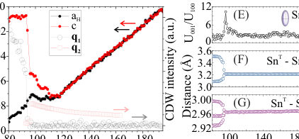
<figcaption class="paper-figure-caption"><b>Fig 1.</b> Figure 1. (A) High-temperature crystal structure (P6/mmm). V atoms (red) form a kagome lattice, SnH atoms (light grey) occupy honeycomb sites, and SnT (blue) and Sc (purple) form trimers along the out-of-plane direction. (B) CDW-induced structural modulation with the SnT–Sc–SnT</figcaption>
</figure>
<figure class="paper-figure-card">
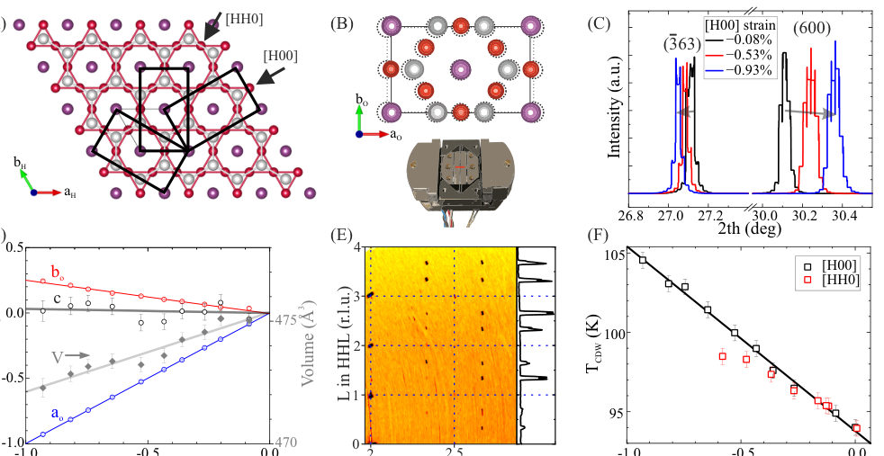
<figcaption class="paper-figure-caption"><b>Fig 2.</b> Figure 2. (A) View of the crystal structure along the c direction, showing three merohedral orthorhombic domains. Arrows indicate the reciprocal-lattice directions along which uniaxial compressive strain was applied. (B) Upper: sketch of the atomic displacements after the application of uniaxial strain along [H00] direction. Dashed lines indicate the undistorted structure; the final orthorhombic lattice is indicated by solid black lines. Bottom: Sketch of the uniaxial strain device. (C) Shift of characteristic Bragg peaks under applied strain. (D) Evolution of the orthorhombic lattice parameters and volume as a function of applied strain along the [H00] direction measured at T = 107 K. (E)...</figcaption>
</figure>
<figure class="paper-figure-card">
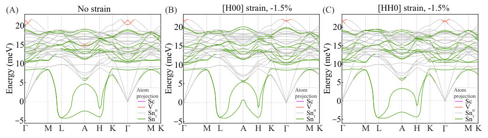
<figcaption class="paper-figure-caption"><b>Fig 3.</b> Figure 3. (A–C) Atomic projection of the phonon dispersion of ScV6Sn6 for the (A) no-strain case, (B) 1.5% compression along [H00], and (C) 1.5% compression along the [HH0] directions, respectively. The color code describes the different atomic weight on each phonon mode.</figcaption>
</figure>
<figure class="paper-figure-card">

<figcaption class="paper-figure-caption"><b>Fig 4.</b> Figure 4. (A) Sketch of the real space definition of the cou- pling strengths, Ji, accounting for the first and second near- est neighbors in the orthorhombic cell. ah and b identify the hexagonal reciprocal lattice vectors. (B) Strain dependence of the transition temperature, TCDW, extracted from the in- tegrated peak area in the Monte Carlo simulation.</figcaption>
</figure>
</div>

<p><strong>Summary.</strong> This work demonstrates that applying controlled uniaxial strain can selectively stabilize and enhance Charge-Density Wave order in $   ext{ScV}_6  ext{Sn}_6$. By inducing a symmetry-lowering orthorhombic distortion, the researchers show that the CDW transition temperature increases significantly. The findings combine advanced X-ray diffraction measurements with sophisticated Potts model simulations to provide a powerful tuning mechanism for frustrated quantum materials.</p>
<p><strong>Why it may be interesting.</strong> While focused on CDW physics, the use of symmetry breaking via external fields (strain) to tune an intrinsic many-body instability is highly relevant to controlling quantum phases in condensed matter systems.</p>
<details>
<summary>Detailed structure</summary>
<p><strong>Main problem.</strong> The study investigates how anisotropic lattice deformation can selectively stabilize and enhance Charge-Density Wave (CDW) order in frustrated kagome metals, contrasting with general suppression mechanisms.</p>
<p><strong>Main result.</strong> Uniaxial strain acts as a powerful symmetry-selective tuning parameter, stabilizing the CDW state by inducing an orthorhombic distortion that lifts domain degeneracy. The enhancement is attributed to the ordering of rattling chains within the lattice structure.</p>
<p><strong>Method.</strong> The research combines high-resolution X-ray diffraction under controlled uniaxial strain (experiment) with phenomenological modeling using a three-state Potts framework and Monte Carlo simulations (theory).</p>
<p><strong>Model / system.</strong> The physical system is $    ext{ScV}_6  ext{Sn}_6$, a kagome metal exhibiting CDW order. The underlying physics is modeled by mapping the low-temperature state onto an effective three-state Potts model incorporating strain-dependent Ising couplings.</p>
<p><strong>Key observables.</strong> CDW transition temperature ($T_{	ext{CDW}}$), lattice parameters ($    ext{a}_o,   ext{b}_o,   ext{c}_o$), diffuse scattering intensity, and the evolution of structural symmetry from hexagonal to orthorhombic.</p>
<p><strong>Important parameters / regimes.</strong> Uniaxial strain magnitude (e.g., $-0.6\%$ compression along $[	ext{HH}0]$), temperature ($T_{	ext{CDW}}$), and coupling constants within the Potts model.</p>
<p><strong>Assumptions / limitations.</strong> The CDW physics can be effectively mapped onto a three-state Potts model, and the enhancement mechanism is primarily driven by anisotropic lattice deformation breaking rotational symmetry.</p>
<p><strong>Figures summary.</strong> Figures detail structural transformations from hexagonal to orthorhombic phases under strain; simulations show $T_{	ext{CDW}}$ increasing monotonically with compressive strain; ARPES confirms electronic renormalization localized at specific terminations ($   ext{V}_3    ext{Sn}$).</p>
<p><strong>Paper structure.</strong> The paper progresses by first establishing the structural consequences of uniaxial strain (XRD/structural analysis), then modeling the resulting order-disorder transition using a Potts model (MC simulations), and finally confirming the electronic signature via ARPES.</p>
</details>
<details>
<summary>Abstract</summary>
<p>Charge-density-wave (CDW) order in kagome metals is highly sensitive to external tuning parameters such as chemical substitution and hydrostatic pressure, which generally suppress long-range order. Here, using high-resolution X-ray diffraction under controlled uniaxial strain, we show that anisotropic lattice deformation instead stabilizes and enhances the CDW state in ScV$_6$Sn$_6$. Compression along the [H00] and [HH0] directions lowers the crystal symmetry from hexagonal to orthorhombic, lifts the degeneracy between symmetry-equivalent in-plane CDW domains, and promotes long-range order while preserving the underlying trimer instability. Phonon calculations indicate only a moderate stabilization of the imaginary flat phonon mode, demonstrating that the increase in T$_\mathrm{CDW}$ is primarily driven by the in-plane ordering of the Sn$^\mathrm{T}$--Sc--Sn$^\mathrm{T}$ \textit{rattling} chains within the frustrated kagome lattice. A phenomenological model incorporating strain-dependent Ising couplings within a three-state Potts framework successfully reproduces the evolution of T$_\mathrm{CDW}$ under compression and captures the continuous nature of the transition. Our results establish uniaxial strain as a powerful symmetry-selective tuning parameter for order-disorder transformations in frustrated lattices.</p>
</details>
<p><sub><a href="#top">↑ back to top</a></sub></p>

<p><a id="paper-2606.05690"></a></p>
<h3 id="learning-hamiltonians-at-long-times"><a href="http://arxiv.org/abs/2606.05690v1">Learning Hamiltonians at Long Times</a></h3>
<p><strong>Authors:</strong> Constantin Cedillo Vayson de Pradenne, Jordan Cotler, Hsin-Yuan Huang<br>
<strong>Type:</strong> theory · <strong>Category:</strong> statistical mechanics · <strong>PDF:</strong> <a href="https://arxiv.org/pdf/2606.05690v1">https://arxiv.org/pdf/2606.05690v1</a><br>
<strong>Analysis basis:</strong> full PDF text, analyzed in chunks
<strong>Topic relevance:</strong> <code>entanglement &amp; information structure</code> <strong>2/5</strong> · <code>non-equilibrium dynamics</code> <strong>2/5</strong> · <code>analog quantum simulation</code> <strong>1/5</strong> · <code>non-equilibrium universality</code> <strong>1/5</strong></p>
<div class="figure-strip-hint">↔ Scroll figures horizontally</div>
<div class="paper-figures-scroll">
<figure class="paper-figure-card">

<figcaption class="paper-figure-caption"><b>Fig 1.</b> Figure 1: Hamiltonian learning from weak equilibration. (a) Schematic of the mech- anism. Under long-time evolution, local observables in the search space generically lose their infinite-temperature autocorrelation, while the Hamiltonian direction is exactly conserved. Classi- cal shadow measurements on random product-state probes produce a data matrix whose approxi- mate null vector recovers H. (b) Weak-equilibration diagnostic for random local Hamiltonians. For each system size n, we track how strongly the most slowly decorrelating normalized local observable orthogonal to H retains its initial value under the dynamics. This quantity starts at 1 and rapidly settles to a plateau below 1....</figcaption>
</figure>
</div>

<p><strong>Summary.</strong> The paper develops the theoretical tools to uniquely identify an unknown local Hamiltonian $H$ governing a quantum system by analyzing its time evolution $U(t)$. By proving that the commutator gap must be non-zero, it establishes that all other local observables lose their correlations (weak equilibration) over time. This provides a powerful diagnostic tool for characterizing the dynamics of complex many-body systems.</p>
<p><strong>Why it may be interesting.</strong> This work provides a rigorous theoretical framework connecting fundamental concepts in quantum dynamics—namely, spectral gaps and conservation laws—to practical tasks like quantum state tomography and Hamiltonian reconstruction from limited measurements. It bridges condensed matter theory with quantum information theory.</p>
<details>
<summary>Detailed structure</summary>
<p><strong>Main problem.</strong> The central problem is determining an unknown local Hamiltonian $H$ governing a quantum system from observing only the time evolution unitary $U(t) = e^{-iHt}$ at a single, potentially very long, time $t$. This is framed as an identifiability problem.</p>
<p><strong>Main result.</strong> For broad ensembles of Hamiltonians, a single long-time measurement suffices to uniquely determine the Hamiltonian direction up to scale by showing that all other local observables lose their autocorrelation exponentially or polynomially fast.</p>
<p><strong>Method.</strong> The analysis relies on establishing and bounding the commutator gap—both static ($\lVert [A, H] 
Vert_F$) and dynamic ($\lVert [U(t), A] 
Vert_F$)—which quantifies how strongly the dynamics rotate an observable $A$. This gap is then used to bound the decay of local autocorrelations.</p>
<p><strong>Model / system.</strong> The system consists of quantum many-body systems (e.g., TFIM, general 2-local models) evolving unitarily in a Hilbert space spanned by Pauli strings. The Hamiltonian $H$ and observables $A$ are restricted to be sums of local Pauli operators.</p>
<p><strong>Key observables.</strong> The primary diagnostics are the dynamic commutator $\lVert [U(t), A] 
Vert_F$, the static commutator gap, and the normalized autocorrelation function $C_A(t) = rac{1}{d}	ext{tr}(A(t)A)$.</p>
<p><strong>Important parameters / regimes.</strong> The analysis depends on the system size ($n$), the sampling time ($t$ or $T$), and the existence of a non-zero commutator gap, which must be inverse-polynomial in $n$.</p>
<p><strong>Assumptions / limitations.</strong> The results are proven for 'broad ensembles' of random Hamiltonians; worst-case integrable systems where many observables commute with $H$ remain outside the scope. The learning guarantee is an average-case result.</p>
<p><strong>Figures summary.</strong> Figures illustrate the decay of local autocorrelations (dropping below 1) and show that the dynamical commutator gap scales predictably with system size, supporting the theoretical bounds derived from static gaps.</p>
<p><strong>Paper structure.</strong> The paper develops theory by first relating dynamic to static commutator gaps using time-evolution identities. It then proves lower bounds on these gaps for specific local structures (Pauli-injective/geometrically local regimes). Finally, it applies these gap estimates to derive weak equilibration statements and the final Hamiltonian learning guarantee.</p>
</details>
<details>
<summary>Abstract</summary>
<p>We study the problem of learning an unknown $n$-qubit Hamiltonian $H$ from $U = e^{-iHt}$ for a single time $t$, where $t$ may be arbitrarily large. For broad families of local Hamiltonians, we prove that, with high probability over $H$ and $t$, any sum of local observables $A$ that is normalized and orthogonal to $H$ satisfies $\tfrac{1}{2^n}\|[U(t),A]\|_F^2 \geq 1/\text{poly}(n)$. The Hamiltonian is therefore the unique approximately conserved local observable, and we can efficiently recover $H$, up to scale, as the approximate null vector of a data matrix built from random product-state inputs and classical shadows. As a corollary, we obtain a weak equilibration statement: the infinite-temperature autocorrelation of every sum of local observables orthogonal to $H$ decays by at least an inverse-polynomial amount.</p>
</details>
<p><sub><a href="#top">↑ back to top</a></sub></p>

<p><a id="paper-2606.05472"></a></p>
<h3 id="realistic-quantum-device-data-synthesized-by-consumer-ai-and-how-to-identify-it"><a href="http://arxiv.org/abs/2606.05472v1">Realistic quantum device data synthesized by consumer AI and how to identify it</a></h3>
<p><strong>Authors:</strong> S. M. Frolov, O. V. Kravchenko<br>
<strong>Type:</strong> both · <strong>Category:</strong> other · <strong>PDF:</strong> <a href="https://arxiv.org/pdf/2606.05472v1">https://arxiv.org/pdf/2606.05472v1</a><br>
<strong>Analysis basis:</strong> full PDF text, analyzed in chunks
<strong>Topic relevance:</strong> <code>analog quantum simulation</code> <strong>2/5</strong> · <code>Kondo &amp; dissipative impurity</code> <strong>1/5</strong> · <code>QC/QI experiment</code> <strong>1/5</strong> · <code>methods for driven-dissipative</code> <strong>1/5</strong> · <code>non-equilibrium dynamics</code> <strong>1/5</strong></p>
<div class="figure-strip-hint">↔ Scroll figures horizontally</div>
<div class="paper-figures-scroll">
<figure class="paper-figure-card">

<figcaption class="paper-figure-caption"><b>Fig 1.</b> Figure 1: Synthetic transmon data. a) Gate voltage dependence of single tone response of a superconductor-semiconductor transmon coupling to a λ/4 coplanar waveguide resonator with frequency 8.182 GHz, coupling quality factor 2000. b) Two-tone spectroscopy as a function of power showing simulated f01 =6.578 GHz and f02/2 resonances using qubit anharmonicity -380 MHz. c) Rabi oscillations “chevron” pattern using relaxation time T1 = 5.6 μS. d) Rabi oscillations as a function of power. In Figure 1 we demonstrate a set of synthetic data for a superconducting transmon qubit (31), an electronic device that is the basis for several prominent quantum computing projects (32, 33). Improvement of...</figcaption>
</figure>
<figure class="paper-figure-card">

<figcaption class="paper-figure-caption"><b>Fig 2.</b> Figure 2: AI-augmented Majorana nanowire data. a) Real experimental tunneling spectroscopy data from Ref. (37). b) Panel a) augmented with a zero-bias peak. c) Panel a) augmented with higher finite-bias conductance. d) Augmentations from panels b) and c) combined. In Figure 2, we demonstrate how experimental data can be augmented using AI. For this example we start with real tunneling spectroscopy data from Ref. (37) on the so-called Majorana nanowires. In these devices, superconductor nanowires are coated with a layer of a superconductor. This induces quantized states in the nanowire which can be detected by resonant tunneling across a potential barrier. The features manifest as peaks on a...</figcaption>
</figure>
<figure class="paper-figure-card">

<figcaption class="paper-figure-caption"><b>Fig 3.</b> Figure 3: Real vs. synthetic idle noise of a lock-in amplifier. Measured, fast fourier transformed and synthetic data for x-component of voltage Vx from a Stanford Research Systems SR830 lock-in amplifier using the following settings: a) integration time constant 300 ms, filter 24 dB/octave b) 100 ms, 18 dB/octave c) 100 ms, 6 dB/octave. Data plotted in virtual time (1s between data points).</figcaption>
</figure>
</div>

<p><strong>Summary.</strong> This paper investigates the ability of consumer generative AI to synthesize highly convincing data for quantum electronic devices. By simulating measurements like qubit spectroscopy and Majorana signatures, the authors show that plausible fake datasets can be generated using basic physics knowledge. The key takeaway is a call for mandatory sharing of large volumes of raw primary data to authenticate real scientific findings.</p>
<p><strong>Why it may be interesting.</strong> It highlights a critical methodological challenge in modern experimental physics: distinguishing genuine discovery from sophisticated AI fabrication, which impacts how theoretical predictions are validated against empirical evidence.</p>
<details>
<summary>Detailed structure</summary>
<p><strong>Main problem.</strong> The increasing capability of generative AI to synthesize highly realistic numerical data for quantum physics, raising concerns about misrepresenting synthetic outputs as genuine experimental results.</p>
<p><strong>Main result.</strong> AI can generate convincing datasets mimicking iconic quantum effects (e.g., Majorana modes, Josephson junctions) using basic physical models, but the defense against this is sharing large volumes of raw primary data.</p>
<p><strong>Method.</strong> The authors demonstrate AI synthesis by prompting LLMs to write and execute Python code that simulates known physics equations and adds realistic noise/artifacts to generate synthetic measurements.</p>
<p><strong>Model / system.</strong> The focus is on quantum electronic devices, including superconducting transmon qubits, Majorana nanowires, and Quantum Point Contacts (QPCs). The underlying physics relies on established models like the qubit Hamiltonian or tunneling conductance equations.</p>
<p><strong>Key observables.</strong> Spectroscopy measurements ($S_{21}$ vs. gate voltage/power), Rabi oscillations, zero-bias anomalies in tunneling spectroscopy, and quantized conductance plateaus.</p>
<p><strong>Important parameters / regimes.</strong> Gate voltage, microwave power, temperature, magnetic field (implied for Majorana studies).</p>
<p><strong>Assumptions / limitations.</strong> The primary defense against AI fabrication is the mandatory sharing of large volumes of raw, unprocessed primary data files and metadata.</p>
<p><strong>Figures summary.</strong> Figures illustrate synthetic transmon qubit characterization (single/two-tone spectroscopy, Rabi oscillations) and augmented Majorana nanowire tunneling spectra to suggest topological superconductivity.</p>
<p><strong>Paper structure.</strong> The paper establishes the problem (AI synthesis capability), demonstrates its power across multiple quantum systems using specific examples (transmons, QPCs), and concludes by recommending data sharing as the necessary authentication standard.</p>
</details>
<details>
<summary>Abstract</summary>
<p>With the advance of generative artificial intelligence (AI) synthetic texts and images have become commonplace. These capabilities offer clear benefits, but have also raised a number of ethical concerns that often have to do with misrepresenting AI outputs as genuine material. A lesser known capability of generative AI is to perform the basic analysis, processing and even synthesis of numerical data. This raises the question of whether AI can be used to imitate experimental data that an expert would consider scientifically meaningful and on par with data in the figures of peer-reviewed manuscripts? In this paper, we focus on synthesizing data inspired by well-known experiments done frequently on quantum electronic devices. This field is related to information technologies such as spintronics and quantum computing, and is considered data-rich and data-driven. We demonstrate that it is possible to generate dramatic signals associated with iconic effects such as quantum bit control, Majorana fermions, Josephson effects, quantum dots and wires using widely available ChatGPT. We find that because some of the clearest data from quantum devices can be expressed in terms of relatively basic mathematical models, AI does not need to learn on the specialized body of data. Instead, knowledge of the physics equations and of the basic features of experimental signals can go a long way towards building a realistic dataset. We also demonstrate that real data can be augmented by AI, and that AI can mimic the noise of common scientific instruments. To help assure that published data come from experiments and are not synthesized by AI, we recommend sharing large volumes of the primary data. While it is straightforward for AI to mimic a few sets of data, consistently generating long measured sequences poses sufficient barriers to the proliferation of undisclosed synthetic data.</p>
</details>
<p><sub><a href="#top">↑ back to top</a></sub></p>

<p><a id="paper-2606.05356"></a></p>
<h3 id="fermiology-and-the-candidate-chiral-superconductor-in-rhombohedral-tetralayer-graphene"><a href="http://arxiv.org/abs/2606.05356v1">Fermiology and the Candidate Chiral Superconductor in Rhombohedral Tetralayer Graphene</a></h3>
<p><strong>Authors:</strong> Sandesh S. Kalantre, Ben H. Alexander, Julian May-Mann, Jonah Herzog-Arbeitman, Marisa Hocking, Qingrui Cao, Kenji Watanabe, Takashi Taniguchi, David Goldhaber-Gordon, Andrew J. Mannix, Trithep Devakul, Yves H. Kwan, Daniel E. Parker, Aaron Sharpe<br>
<strong>Type:</strong> both · <strong>Category:</strong> strongly correlated electrons · <strong>PDF:</strong> <a href="https://arxiv.org/pdf/2606.05356v1">https://arxiv.org/pdf/2606.05356v1</a><br>
<strong>Analysis basis:</strong> full PDF text, analyzed in chunks
<strong>Topic relevance:</strong> <code>analog quantum simulation</code> <strong>2/5</strong> · <code>Keldysh / 2PI / non-Gaussian methods</code> <strong>1/5</strong> · <code>Kondo &amp; dissipative impurity</code> <strong>1/5</strong> · <code>non-equilibrium dynamics</code> <strong>1/5</strong></p>
<div class="figure-strip-hint">↔ Scroll figures horizontally</div>
<div class="paper-figures-scroll">
<figure class="paper-figure-card">

<figcaption class="paper-figure-caption"><b>Fig 1.</b> FIG. 1. Symmetry-broken phases in R4G: (a) Schematic of the dual-graphite-gated R4G device. Top and bottom graphite gates, held at potentials Vtg and Vbg, independently control the carrier density n and the displacement field D. (b) Low-energy band structure of R4G at representative interlayer potentials uD, showing the opening of a band gap and the evolution into a Mexican hat dispersion with the band minimum at finite momentum, relative to K. (c) Single-particle density of states as a function of carrier density n and interlayer potential uD. Sharp features trace vHSs, which in the single-particle picture demarcate Lifshitz boundaries between simply-connected, annular, and three-pocket...</figcaption>
</figure>
<figure class="paper-figure-card">

<figcaption class="paper-figure-caption"><b>Fig 2.</b> FIG. 2. Transport characterization of the superconducting state: (a) Longitudinal resistance Rxx as a function of carrier density n and displacement field D in the vicinity of the candidate chiral superconducting (CSC) region at T = 28 mK and zero magnetic field. The dark region of vanishing resistance traces the superconducting dome, emerging near D/ϵ0 = 0.9 V/nm and extending to D/ϵ0 ≈1.05 V/nm. (b) Line cuts of Rxx vs. n with D/ϵ0 between 0.9 V/nm and 1.05 V/nm (color scale). (c) Rxx as a function of n and temperature T at D/ϵ0 = 1 V/nm, showing the superconducting dome with optimal doping near n = 0.6×1012 cm−2 and a critical temperature of Tc ≈175 mK. (d) Rxx as a function of n and...</figcaption>
</figure>
<figure class="paper-figure-card">

<figcaption class="paper-figure-caption"><b>Fig 3.</b> FIG. 3. Quantum oscillations near the superconducting state: (a) Longitudinal resistance Rxx as a function of carrier density n and perpendicular magnetic field B at D/ϵ0 = 1 V/nm and T = 28 mK. The white line segment indicates the density extent of the superconducting dome at zero field. (b) Oscillatory component ∆Rxx after subtracting a smooth density. Two distinct regions are visible: a Landau fan emanating from the circular quarter metal at higher density, and a region at lower density where oscillations disperse weakly with n. (c) Single-particle Landau level calculation at uD = 43 meV, reproducing the weak dispersion of LLs with density at low n through level repulsion in the...</figcaption>
</figure>
<figure class="paper-figure-card">

<figcaption class="paper-figure-caption"><b>Fig 4.</b> FIG. 4. Phase diagram near the candidate chiral superconducting state: (a) Rxx vs n and D near the CSC state. The gray region denotes where the two-terminal resistance of the device is sufficiently large compared to other impedances in the measurement setup that 10% or more of the expected bias current does not reach the drain. The horizontal dashed lines show the density ranges used for the FFT analysis in (c). (b) Schematic phase diagram inferred from the FFT analysis, showing the superconducting region (SC, blue) embedded within a multitone state (MT, green) which is separated from the simply- connected circular quarter metal (CQM, pink) by a transition. (c) FFTs of the oscillatory...</figcaption>
</figure>
</div>

<p><strong>Summary.</strong> This research investigates the superconducting mechanism in rhombohedral tetralayer graphene by correlating transport measurements with theoretical calculations. The key finding is that the normal state supporting superconductivity is far more complex than previously assumed, exhibiting a 'multitone' signature incompatible with simple Fermi surface models. This forces a re-evaluation of how pairing and topological properties emerge from correlated electron systems.</p>
<p><strong>Why it may be interesting.</strong> The investigation into exotic electronic phases like chiral superconductivity and the failure of simple models to explain measured quantum oscillation patterns provides a rich playground for understanding strong correlations in 2D materials.</p>
<details>
<summary>Detailed structure</summary>
<p><strong>Main problem.</strong> The study aims to characterize the normal state feriology of rhombohedral tetralayer graphene (R4G) to understand the pairing mechanism and potential chirality in a candidate chiral superconductor.</p>
<p><strong>Main result.</strong> Experimental quantum oscillation measurements reveal a complex 'multitone' normal state that is inconsistent with simple models, suggesting the superconducting phase emerges from a highly intricate electronic structure.</p>
<p><strong>Method.</strong> The work combines experimental magneto-transport measurements (Shubnikov-de Haas oscillations) with extensive theoretical modeling using Self-consistent Hartree-Fock (SCHF) calculations to map out competing correlated electron phases.</p>
<p><strong>Model / system.</strong> The physical system is rhombohedral tetralayer graphene, modeled using continuum Hamiltonians that incorporate spin and valley polarization effects. Theoretical analysis explores various correlated states like quarter metals, nematic, annular, and intervalley coherent (IVC) phases.</p>
<p><strong>Key observables.</strong> Shubnikov-de Haas oscillation frequencies/tones, superconducting critical temperature ($T_c$), anomalous Hall response, and flavor polarization ratios ($n_{\max}/n$).</p>
<p><strong>Important parameters / regimes.</strong> Carrier density ($n$), displacement field ($D/\epsilon_0$), dielectric constant ($\epsilon$), and magnetic field ($B$).</p>
<p><strong>Assumptions / limitations.</strong> The analysis relies on semiclassical Onsager quantization for quantum oscillations, but the observed multitone state challenges simple single-band models. Theoretical calculations often neglect spin-orbit coupling or assume specific symmetries.</p>
<p><strong>Figures summary.</strong> Figures illustrate phase diagrams showing transitions between different metallic states (QM $  o$ MT), show $R_{xx}$ mapping out superconducting domes and polarized phases, and display FFTs confirming the transition from single to multi-tone quantum oscillation patterns.</p>
<p><strong>Paper structure.</strong> The paper progresses by first establishing experimental evidence of superconductivity and complex normal state oscillations. It then uses detailed theoretical calculations (HF/SCHF) to map out possible correlated ground states (QM, IVC, nematic), ultimately concluding that the observed multitone state is beyond simple mean-field predictions.</p>
</details>
<details>
<summary>Abstract</summary>
<p>Chiral superconductivity, in which the phase of the superconducting order parameter winds in momentum space, has long been sought for its close link to topological superconductivity. Recent work reported a superconductor in rhombohedral multilayer graphene emerging from a time-reversal symmetry broken normal state, suggesting that it could be a chiral superconductor. However, the possibility of chirality depends on the symmetry and structure of the normal-state Fermi surface, which have not been directly measured. Here we measure quantum oscillations in rhombohedral tetralayer graphene over a broad range of the phase diagram, including the superconducting region. At densities well above the onset of superconductivity, we reproduce previously-reported oscillations consistent with a spin- and valley-polarized quarter metal with a single simply-connected Fermi pocket. As the carrier density is reduced, we find a transition to a complex "multitone" state that persists through the superconducting region. This state's spectrum of quantum oscillations is incompatible with a simply-connected quarter metal. The next-simplest candidate normal states suggested by our microscopic modeling (fully-polarized annular, nematic, and three-pocket states) are inconsistent with our measurements, albeit difficult to rule out entirely. The normal state is thus seen to be richer than previously envisaged, reshaping the search for the superconducting mechanism and the possible chirality of the pairing channel.</p>
</details>
<p><sub><a href="#top">↑ back to top</a></sub></p>

<p><a id="paper-2606.05496"></a></p>
<h3 id="ideal-quantum-geometry-for-fractional-chern-insulators"><a href="http://arxiv.org/abs/2606.05496v1">Ideal Quantum Geometry for Fractional Chern Insulators</a></h3>
<p><strong>Authors:</strong> Jennifer Cano, Jie Wang<br>
<strong>Type:</strong> theory · <strong>Category:</strong> strongly correlated electrons · <strong>PDF:</strong> <a href="https://arxiv.org/pdf/2606.05496v1">https://arxiv.org/pdf/2606.05496v1</a><br>
<strong>Analysis basis:</strong> full PDF text, analyzed in chunks
<strong>Topic relevance:</strong> <code>analog quantum simulation</code> <strong>2/5</strong> · <code>Keldysh / 2PI / non-Gaussian methods</code> <strong>1/5</strong> · <code>driven-dissipative phase transition</code> <strong>1/5</strong> · <code>entanglement &amp; information structure</code> <strong>1/5</strong></p>
<div class="figure-strip-hint">↔ Scroll figures horizontally</div>
<div class="paper-figures-scroll">
<figure class="paper-figure-card">

<figcaption class="paper-figure-caption"><b>Fig 1.</b> Figure 1</figcaption>
</figure>
<figure class="paper-figure-card">

<figcaption class="paper-figure-caption"><b>Fig 2.</b> Figure 2</figcaption>
</figure>
<figure class="paper-figure-card">

<figcaption class="paper-figure-caption"><b>Fig 3.</b> Figure 3</figcaption>
</figure>
</div>

<p><strong>Summary.</strong> The paper rigorously connects the concept of 'ideal quantum geometry'—where Bloch bands mimic Landau levels by saturating specific geometric bounds—to the realization of Fractional Chern Insulators (FCIs). While ideal band geometry is a necessary condition, the authors demonstrate that it is not sufficient to guarantee the FCI ground state stability, highlighting the critical role of electron-electron interactions.</p>
<p><strong>Why it may be interesting.</strong> This work is highly relevant as it bridges single-particle band theory (a common tool in condensed matter) with interacting many-body physics. The explicit failure of geometric criteria to predict interaction stability provides crucial physical insight for designing topological materials.</p>
<details>
<summary>Detailed structure</summary>
<p><strong>Main problem.</strong> The paper investigates the role of quantum geometry (Berry curvature, metric) in single-particle Bloch bands to understand the conditions necessary for realizing Fractional Chern Insulators (FCIs). It specifically addresses whether geometric properties alone can predict the stability of interacting many-body topological phases.</p>
<p><strong>Main result.</strong> While ideal band geometry (saturation of geometric bounds) is a strong indicator, it proves insufficient on its own to guarantee the FCI ground state; the robustness of the Laughlin state against changes in single-particle band geometry demonstrates this limitation.</p>
<p><strong>Method.</strong> The analysis combines theoretical derivations involving quantum geometric tensors (QGT), topological invariants like the Chern number, and comparisons between ideal Bloch bands and established models like Landau levels. It uses analytical techniques to establish mathematical equivalences between different geometric conditions.</p>
<p><strong>Model / system.</strong> The study focuses on single-band systems in two dimensions, including lattice analogs of Quantum Hall physics (e.g., the Kapit-Mueller model) and moiré materials. The underlying framework involves analyzing Bloch states $\vert u_k 
angle$ whose geometry is characterized by the Berry connection and curvature.</p>
<p><strong>Key observables.</strong> Berry Curvature ($\Omega_k$), Chern Number ($C$), Quantum Metric, Trace Bound ($  ext{Tr} g_k$), and the QGT ($\mathcal{Q}_{ab}^k$).</p>
<p><strong>Important parameters / regimes.</strong> Filling factor ($
u$), magnetic flux ($\phi$), lattice parameters (e.g., moiré periodicity), and interaction strength (Hubbard repulsion).</p>
<p><strong>Assumptions / limitations.</strong> The primary assumption is that ideal bands are characterized by the saturation of geometric bounds, which implies momentum-space holomorphicity of cell-periodic wavefunctions.</p>
<p><strong>Figures summary.</strong> Figures compare the deviation from the trace condition and the many-body spectrum when changing orbital embeddings in the Kapit-Mueller model, showing spectral robustness despite geometric violation.</p>
<p><strong>Paper structure.</strong> The paper progresses by defining quantum geometry concepts (Berry curvature/metric), establishing criteria for 'ideal bands' (saturation of bounds $   ext{Tr} g_k = |\Omega_k|$), demonstrating these conditions are equivalent to momentum-space holomorphicity, and finally testing this criterion against the known robustness of FCI ground states in lattice models.</p>
</details>
<details>
<summary>Abstract</summary>
<p>Quantum geometry plays a fundamental role in many aspects of condensed matter physics. Among its central objects are the Berry curvature and the quantum metric -- quantities that, while distinct, are intertwined through geometric constraints. In this article, we survey recent progress in understanding when and how this bound is saturated, with particular emphasis on the emergence of momentum-space holomorphicity of Bloch states. These developments highlight a profound connection between certain ideal Bloch bands and the Hilbert space structure of the lowest Landau level. We elucidate this relationship through a review of quantum Hall physics in both homogeneous and spatially varying magnetic fields, and conclude by exploring its implications for the search for fractionalized phases in emerging platforms, including moiré materials.</p>
</details>
<p><sub><a href="#top">↑ back to top</a></sub></p>

<p><a id="paper-2606.05856"></a></p>
<h3 id="understanding-deconfined-quantum-critical-points-from-crystalline-categorical-landau-paradigm"><a href="http://arxiv.org/abs/2606.05856v1">Understanding deconfined quantum critical points from crystalline categorical Landau paradigm</a></h3>
<p><strong>Authors:</strong> Hiromi Ebisu, Bo Han, Weiguang Cao<br>
<strong>Type:</strong> theory · <strong>Category:</strong> strongly correlated electrons · <strong>PDF:</strong> <a href="https://arxiv.org/pdf/2606.05856v1">https://arxiv.org/pdf/2606.05856v1</a><br>
<strong>Analysis basis:</strong> full PDF text, analyzed in chunks
<strong>Topic relevance:</strong> <code>analog quantum simulation</code> <strong>2/5</strong> · <code>Keldysh / 2PI / non-Gaussian methods</code> <strong>1/5</strong> · <code>driven-dissipative phase transition</code> <strong>1/5</strong></p>
<div class="figure-strip-hint">↔ Scroll figures horizontally</div>
<div class="paper-figures-scroll">
<figure class="paper-figure-card">

<figcaption class="paper-figure-caption"><b>Fig 1.</b> FIG. 1: After gauging the internal symmetry, the DQCP with LSM anomalous symmetry is mapped to a crystalline categorical Landau transition.</figcaption>
</figure>
<figure class="paper-figure-card">

<figcaption class="paper-figure-caption"><b>Fig 2.</b> FIG. 2: This F-symbol measures the relative sign between two fusion orders:(a ⊗D) ⊗b vs a ⊗(D ⊗b).</figcaption>
</figure>
<figure class="paper-figure-card">

<figcaption class="paper-figure-caption"><b>Fig 3.</b> FIG. 3: DQCPs with different crystalline categorical Landau origins. In particular, DQCP1 and DQCP2 are captured by Eq. (23) and (39), respectively, while DQCP3 is briefly discussed in the Outlook.</figcaption>
</figure>
<figure class="paper-figure-card">

<figcaption class="paper-figure-caption"><b>Fig 4.</b> FIG. 4: Graphical representation of the F-symbol. The red, black, and light-blue lines denote the bZσ 2, D, and bZτ 2 defects, respectively. The F-symbol compares two fusion paths, (a ⊗D) ⊗b and a ⊗(D ⊗b), corresponding to opposite orders of fusing the invertible defects a and b into the non-invertible defect D. In the lattice realization, the relative sign is determined by the commutation relation between the corresponding fusion operators.</figcaption>
</figure>
</div>

<p><strong>Summary.</strong> The paper develops an advanced theoretical framework to understand Deconfined Quantum Critical Points (DQCPs) that evade conventional Landau theory. It achieves this by showing that these critical points can be mapped onto transitions governed by novel 'crystalline categorical symmetries' derived through a process called gauging anomalous onsite symmetries. The distinction between different symmetry types is rigorously established using the F-symbol of the underlying fusion category.</p>
<p><strong>Why it may be interesting.</strong> This work provides a powerful, mathematically rigorous framework for classifying quantum critical points in strongly correlated systems by extending symmetry concepts from standard group theory to full fusion categories. This has implications for understanding exotic phases beyond simple mean-field descriptions.</p>
<details>
<summary>Detailed structure</summary>
<p><strong>Main problem.</strong> The paper addresses Deconfined Quantum Critical Points (DQCPs) which defy conventional Landau theory due to competing orders breaking incompatible internal and crystalline symmetries.</p>
<p><strong>Main result.</strong> A class of DQCPs can be reinterpreted as Landau-type transitions by gauging anomalous onsite symmetries, leading to descriptions governed by crystalline categorical symmetries like Rep(D8)-type or Rep(H8)-type.</p>
<p><strong>Method.</strong> The core method involves 'gauging' the system's anomalous symmetries and analyzing the resulting effective lattice Hamiltonians in a dual description. The distinction between candidate symmetries is made by calculating the F-symbol of the underlying fusion category.</p>
<p><strong>Model / system.</strong> The analysis uses microscopic lattice models, specifically focusing on transitions between magnetic (FM) and Valence Bond Solid (VBS) orders in spin chains, exemplified by the FM–VBS and yAFM–VBS DQCPs.</p>
<p><strong>Key observables.</strong> The F-symbol of the crystalline fusion category is the key diagnostic tool used to distinguish between different symmetry structures ($    ext{Rep}(D_8)$ vs $ ext{Rep}(H_8)$).</p>
<p><strong>Important parameters / regimes.</strong> The transition parameter $\lambda$ governing the mixing between competing phases (e.g., $bH = (1 - \lambda) bH_{	ext{FM}} + \lambda bH_{	ext{VBS}}$).</p>
<p><strong>Assumptions / limitations.</strong> The analysis assumes that LSM anomalies provide a microscopic mechanism for generating these crystalline symmetries via the gauging procedure.</p>
<p><strong>Figures summary.</strong> Figures illustrate the mapping from DQCPs to categorical Landau transitions and use the F-symbol calculation to distinguish between different symmetry types ($    ext{Rep}(D_8)$ vs $ ext{Rep}(H_8)$).</p>
<p><strong>Paper structure.</strong> The paper progresses by first identifying the failure of the standard Landau paradigm, then introducing gauging as a resolution mechanism. It develops this using specific lattice models (FM-VBS and yAFM-VBS), deriving distinct categorical symmetries ($   ext{Rep}(D_8)$ vs $ ext{Rep}(H_8)$) based on detailed calculations involving non-invertible defects and their associated F-symbols.</p>
</details>
<details>
<summary>Abstract</summary>
<p>Deconfined quantum critical points (DQCPs) involving lattice symmetries evade the conventional Landau paradigm because the competing orders break incompatible internal and crystalline symmetries. We show that a class of DQCPs can nevertheless be understood as Landau-type transitions after gauging anomalous onsite symmetries. For spin chains with Lieb-Schultz-Mattis (LSM) anomalies, gauging produces a noninvertible lattice translation whose fusion closes only up to ordinary translations, giving rise to a crystalline categorical symmetry. In the gauged description, the original DQCP becomes a transition between different symmetry breaking patterns of this categorical symmetry. We demonstrate this mechanism in microscopic lattice models; the magnetic-valence-bond-solid (VBS) DQCP realizes a Rep($D_8$)-type crystalline categorical Landau transition, whereas a y-antiferromagnetic-VBS DQCP realizes a Rep($H_8$)-type one. Although Rep($D_8$) and Rep($H_8$) share the same fusion rules, they have inequivalent $F$-symbols and therefore define distinct categorical descriptions. Our results show that the universal categorical structure underlying these DQCPs is encoded in the full fusion category, rather than in the fusion ring alone.</p>
</details>
<p><sub><a href="#top">↑ back to top</a></sub></p>

<p><a id="paper-2606.06107"></a></p>
<h3 id="deployed-trusted-node-quantum-key-distribution-over-300-km-with-a-multi-core-fiber-access-link"><a href="http://arxiv.org/abs/2606.06107v1">Deployed trusted-node quantum key distribution over 300 km with a multi-core fiber access link</a></h3>
<p><strong>Authors:</strong> Martin Clason, Joakim Argillander, Didrik Bergström, Daniel Spegel-Lexne, Giulio Foletto, Ashraf El Hassan, Mohamed Bourennane, Onur Günlü, Katia Gallo, Rui Lin, Guilherme B. Xavier<br>
<strong>Type:</strong> experiment · <strong>Category:</strong> quantum information and computing · <strong>PDF:</strong> <a href="https://arxiv.org/pdf/2606.06107v1">https://arxiv.org/pdf/2606.06107v1</a><br>
<strong>Analysis basis:</strong> full PDF text, analyzed in chunks
<strong>Topic relevance:</strong> <code>quantum optics experiment</code> <strong>2/5</strong> · <code>QC/QI experiment</code> <strong>1/5</strong></p>
<div class="figure-strip-hint">↔ Scroll figures horizontally</div>
<div class="paper-figures-scroll">
<figure class="paper-figure-card">

<figcaption class="paper-figure-caption"><b>Fig 1.</b> Figure 1. Overview of the deployed experiment in southeastern Sweden. We deploy a long-distance QKD link between Link¨oping University (LiU) and the the NQCIS Albanova hub at KTH in Stockholm. The two end nodes are connected to an intermediate trusted node located outside of Nyk¨oping (NYK) through deployed single-mode fibers (SMFs). Within the LiU node an additional 33 km multi-core fiber (MCF) spool is employed extending the NYK-LiU link, while allowing spatial multiplexing of classical data channels and additional broadband noise simulating a real populated link. Both QKD receivers (Bob) have been modified to support external superconducting nanowire single-photon detection (SNSPD)...</figcaption>
</figure>
<figure class="paper-figure-card">

<figcaption class="paper-figure-caption"><b>Fig 2.</b> Figure 2. QKD performance between Link¨oping and Nyk¨oping without the MCF connected. a) Secret key rate (SKR) and quantum bit error rate (QBER) when external superconducting nanowire single-photon detectors (SNSPDs) are connected to Bob. The three clear peaks in the QBER curve correspond to the periodic helium condensation cycle of the SNSPDs at the Link¨oping node (Appendix), which was set to happen every 24 hours in this measurement. The re- ported instantaneous values for the QBER are shown in faded blue and red colors, while the average values are otherwise shown as the continuous lines. b) Same results but when using the internal InGaAs avalanche single-photon detector, where we...</figcaption>
</figure>
<figure class="paper-figure-card">

<figcaption class="paper-figure-caption"><b>Fig 3.</b> Figure 3. QKD field-trial with active spatial multiplexing in a MCF access link. a) SKR for the Link¨oping-Nyk¨oping link, with the QKD channel passing through either core 1 or 6 of the MCF, with the other core carrying the downstream channel of a 10 Gbit/s Ethernet optical connection. The upstream channel is fixed at core 7. The other four cores carry broadband noise generated from an LED, whose current we gradually increase within each core cycle, as shown in the figure. b) Reported quantum bit error rate (QBER) for the two measurement bases (X and Z). The gap in the measurement around noon on the third day shown explicitly in b) comes from the condensation cycle of the coldhead in the...</figcaption>
</figure>
<figure class="paper-figure-card">

<figcaption class="paper-figure-caption"><b>Fig 4.</b> Fig. 3(a). During this interval, the end-to-end LiU–KTH key can nevertheless continue to accumulate because pre- viously stored LiU–NYK surplus key is consumed. The LiU–NYK surplus curve therefore directly shows how the</figcaption>
</figure>
<figure class="paper-figure-card">

<figcaption class="paper-figure-caption"><b>Fig 5.</b> Figure 4. SKR performance and information-theoretically secure image transmission. (a) Impact of injected broad- band noise from the LED on the deployed long-distance QKD channel connected to the MCF access link. The error bars represent the standard deviation of the SKR distribution for each LED current. (b) We use the available secret key bits to encrypt the compressed reference image using OTP, given the generated key aggregated over a time budget of 100 s. Each image is compressed using both JPEG 2000 and JPEG AI, where we compare the decompression outputs by splitting each image in half and showing the visual results. Adapted from an image by Brett Morgan, University of Texas at...</figcaption>
</figure>
</div>

<p><strong>Summary.</strong> The research demonstrates a functional trusted-node QKD link over 300 km using deployed commercial hardware integrated with multi-core fibers. Key findings include the necessity of advanced detectors (SNSPDs) for high performance and showing that the achievable key rate directly limits the fidelity of subsequent quantum-secured applications, such as image encryption.</p>
<p><strong>Why it may be interesting.</strong> This work is highly relevant as it bridges fundamental quantum communication theory with practical engineering challenges, specifically addressing the integration of quantum signals into complex, noisy, and dynamically reconfigurable classical fiber infrastructure.</p>
<details>
<summary>Detailed structure</summary>
<p><strong>Main problem.</strong> Demonstrating trusted-node Quantum Key Distribution (QKD) over long distances ($\sim 300$ km) in realistic communication networks that include heterogeneous fiber infrastructure and coexisting classical traffic.</p>
<p><strong>Main result.</strong> The setup successfully demonstrates QKD operation with active core switching and autonomous reinitialization in a dynamic, multi-core fiber environment, while also showing how image fidelity depends on the available key budget.</p>
<p><strong>Method.</strong> The authors implemented a trusted-node QKD link using commercial systems interfaced with external superconducting nanowire single-photon detectors (SNSPDs) over deployed SMF and MCFs.</p>
<p><strong>Model / system.</strong> The physical system is a deployed quantum communication network spanning $\sim 303$ km, utilizing two sub-links connected by a trusted node. The LiU end incorporates a $33 	ext{ km}$ Multi-Core Fiber (MCF) to simulate metropolitan access links coexisting with classical Ethernet traffic and optical noise.</p>
<p><strong>Key observables.</strong> Secret Key Rate ($ ext{SKR}$), Quantum Bit Error Rate ($ ext{QBER}$), Image Fidelity (PSNR, LPIPS).</p>
<p><strong>Important parameters / regimes.</strong> Total distance of $\sim 303 	ext{ km}$; SNSPD detection efficiency and dark count rates; key budget size in kbits.</p>
<p><strong>Assumptions / limitations.</strong> The system relies on Key Management Systems ($   ext{KMSs}$) buffers to smooth out short-term fluctuations in end-to-end key generation rate, and the classical link routing does not require symmetry.</p>
<p><strong>Figures summary.</strong> Figures illustrate the experimental setup map, $   ext{SKR}$ and $ ext{QBER}$ measurements under varying noise levels (including SNSPD cycle effects), and a comparison of image reconstruction fidelity using JPEG 2000 versus deep-learning compression (JPEG AI) as a function of available key budget.</p>
<p><strong>Paper structure.</strong> The paper progresses from characterizing the physical link setup (long-distance trusted node over SMF/MCF) to demonstrating robust operation under dynamic noise conditions, culminating in an application study showing how limited QKD throughput constrains high-level tasks like image encryption.</p>
</details>
<details>
<summary>Abstract</summary>
<p>Quantum key distribution (QKD) is increasingly considered for deployment in realistic communication networks, where long distances, heterogeneous fiber infrastructure, and coexistence with classical traffic present substantial challenges. Here, we demonstrate trusted-node QKD between Linköping University and the Stockholm hub of the Swedish national quantum communication infrastructure over 270 km of deployed single-mode fiber, extended by a 33 km multi-core fiber (MCF) segment emulating a metropolitan access link, for a total distance of 303 km. The two sub-links use commercial QKD systems whose receivers are interfaced with external superconducting nanowire single-photon detectors, enabling operation at losses beyond those supported by standard internal gated-mode detectors. We operate the link while actively switching the QKD channel between two MCF cores, with co-propagating Ethernet traffic and injected broadband optical noise in the other cores. The results demonstrate the integration of commercial QKD into demanding, dynamically reconfigurable fiber infrastructure relevant to future hybrid quantum-classical networks. Finally, using the generated secret keys, we illustrate how limited and time-varying QKD throughput affects one-time-pad-protected image transmission: image fidelity depends strongly on the available QKD-generated key budget and the choice of compression algorithm, highlighting application-level challenges for QKD-based encryption in realistic scenarios.</p>
</details>
<p><sub><a href="#top">↑ back to top</a></sub></p>
<hr>
<p>
<a href="index.html">← Index</a>
 · <a href="papers_02.html">← Previous</a> · <a href="papers_04.html">Next →</a>
</p>
<hr>

</body>
</html>
